03
头部产品：交互与能力变化 计划与目标、会话运行、能力开放、可视化设计和细节打磨。以下逐页保留原材料分析点及其限定。
P124 竞品分析 · 竞品动态 · 分 1 原材料记录
VS Code：会话移到独立进程，浏览器、编辑器、远程可接同一会话 图位待补 · 04 月版本「代理」窗口界面截图。此项按原材料保留，未补造产品截图。
图位待补 · Agent Host 会话跨浏览器／编辑器／远程连接切换的界面（官方博客配图）。此项按原材料保留，未补造产品截图。
图位待补 · 1.138 会话层级视图、待批准项与任务栏角标（官方配图）。此项按原材料保留，未补造产品截图。
04 月版本 · 代理窗口 聊天与会话列表为主界面，可跨项目并行多会话；但会话绑在窗口里，一关就断。 08 月版本 · Agent Host + AHP 会话归独立进程 Agent Host，可在浏览器、编辑器、远程间切换，各 harness 共用。 09 月 1.136／1.138 · 审批台 Agent Merge 自动处理评审、修检查、解冲突直到可合并；人只审标题与合并选项。 原材料判断 重点从选哪个 Agent，转到谁都能接上同一会话。
来源：code.visualstudio.com/blogs/2026/08/26/agent-host-architecture；code.visualstudio.com/updates/v1_136（09-02）、v1_138（09-16），核实于 2026-09-22
查看 P124 原页 · 含原材料文字与占位，非产品实拍 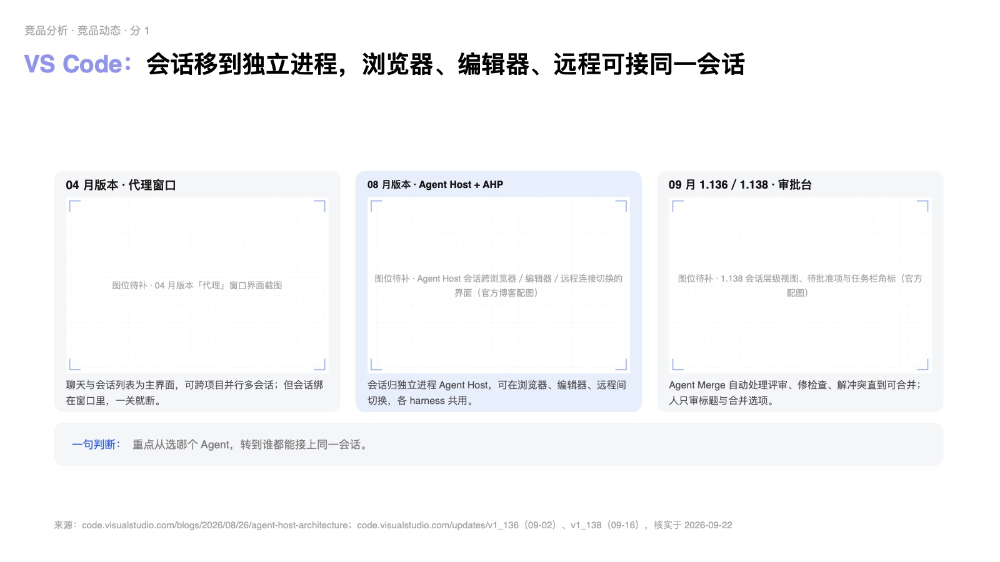
逐页原文 ↗ P125 竞品分析 · 竞品动态 · 分 2 原材料记录
Cursor Projects：云端常驻，协调者只给上千 subagent 分派任务 图位待补 · 04 月 Agents Window 主视图截图。此项按原材料保留，未补造产品截图。
图位待补 · Cursor Projects 协调者视图：云端机器与 subagent 并行状态。此项按原材料保留，未补造产品截图。
图位待补 · Self-hosted machines 设置页：My Machines 与 Team pools。此项按原材料保留，未补造产品截图。
04 月 · Agents Window 左侧 Agent 状态、中间对话、右侧预览；一个人管几个会话，要逐个点开看。 09 月 · Projects 一个协调者管一个目标，人不逐个看 subagent；可由 PR 或定时唤醒。 08-27 / 09-02 · 运行环境搬家 云端 Agent 不连 GitHub 也能开工；自托管机器把执行放进自有网络。 原材料判断 01 解决看见几个 Agent 在跑；Cursor 已到只看目标、不看 Agent。
来源：cursor.com/changelog（Projects 09-10；Self-hosted machines 09-02；Start without a repo 08-27），核实于 2026-09-22
查看 P125 原页 · 含原材料文字与占位，非产品实拍 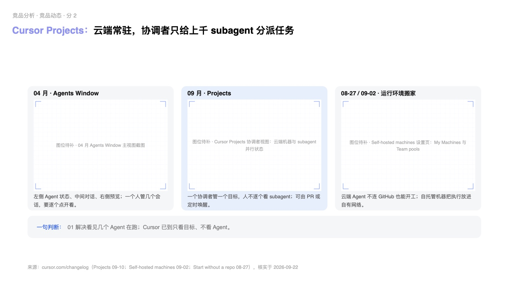
逐页原文 ↗ P126 竞品分析 · 竞品动态 · 分 3 原材料记录
TRAE：两种 Agent 合并为一个，用 /plan、/spec、/goal 分三档 图位待补 · 「/plan」生成规划文档的界面。此项按原材料保留，未补造产品截图。
图位待补 · 「/spec」生成 spec/tasks/checklist 三份文档的界面。此项按原材料保留，未补造产品截图。
图位待补 · 「/goal」设置长期目标的输入界面。此项按原材料保留，未补造产品截图。
/plan 范围：小中型任务：功能开发、模块级重构、缺陷修复 流程：生成规划文档 → 人确认 → 按步骤执行 /spec 范围：系统级任务：大规模重构、多人协作项目 流程：生成 spec / tasks / checklist → 人确认 → 自动更新状态 /goal 范围：长期目标（对齐 Cursor 同名命令的用法） 流程：跨会话维持一个目标，不逐次下达任务 原材料判断 TRAE 与 Cursor 同期出 /goal；/spec 留下过程文档，对应 08、13。
来源：docs.trae.cn/ide_spec-and-plan-workflows · trae.cn/changelog，2026-09-01
查看 P126 原页 · 含原材料文字与占位，非产品实拍 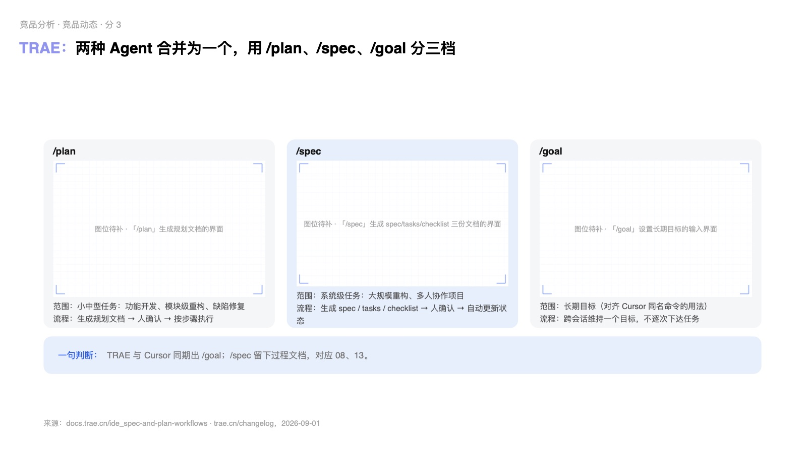
逐页原文 ↗ P127 竞品分析 · 竞品动态 · 分 4 原材料记录
Claude Code：从编码助手到能设计、能自托管的工作台 图位待补 · /design 生成的可编辑画板草案界面。此项按原材料保留，未补造产品截图。
图位待补 · 自托管环境配置或云端会话运行界面。此项按原材料保留，未补造产品截图。
/design 可视化画板 把 Claude Design 画板带进 CLI，先出可编辑草案、选一个再实现 自托管环境 云端会话跑在企业自有基础设施上，Team / Enterprise 公测 原材料判断 CLI 里第一次能做设计，与 02 可视化编程、03 二次编辑同向。
来源：code.claude.com/docs/whats-new，核实于 2026-09-17
查看 P127 原页 · 含原材料文字与占位，非产品实拍 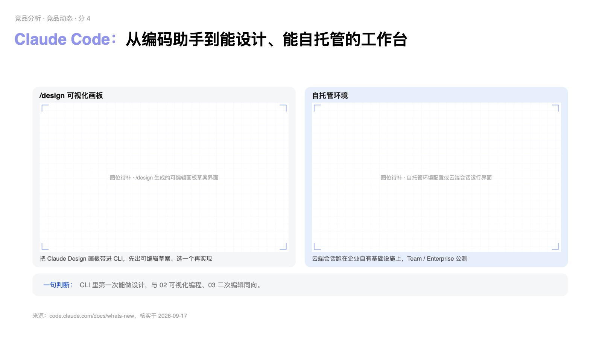
逐页原文 ↗ P128 竞品分析 · 竞品动态 · 分 4-2 原材料记录
Claude Code：会话之间能传消息，审查在后台跑，不占主会话 图位待补 · 跨会话消息传递的界面示例。此项按原材料保留，未补造产品截图。
图位待补 · /code-review 后台运行状态界面。此项按原材料保留，未补造产品截图。
跨会话消息 一个会话能把发现直接传给另一个会话，减少重复排查（2026-08 初） /code-review 后台子代理 作为后台子代理独立跑，不阻塞主会话（2026-07-20~24） 原材料判断 一个会话不再只做一件事，与 10 多 Agent 并行协作同向。
来源：code.claude.com/docs/whats-new，核实于 2026-09-17
查看 P128 原页 · 含原材料文字与占位，非产品实拍 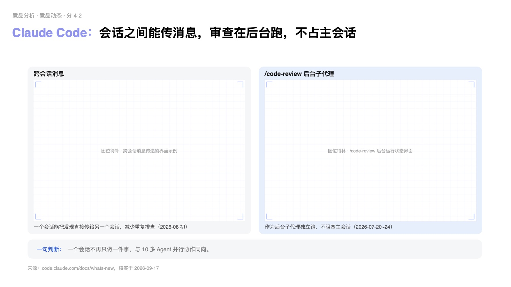
逐页原文 ↗ P129 竞品分析 · 竞品动态 · 分 5 原材料记录
Codex CLI 0.154.0：后台任务可随时插问，多任务用 worktree 并行 图位待补 · 后台任务中插入提问的终端交互截图。此项按原材料保留，未补造产品截图。
图位待补 · 多任务并行的 worktree 界面。此项按原材料保留，未补造产品截图。
Inline Question Answering 后台任务运行中可直接插入提问 Worktree 支持 新增 worktree 支持，多个任务可在独立工作树里并行推进，2026-09-09 原材料判断 运行中可插问，对应 12 互动式意图确认，Codex 已先做。
来源：learn.chatgpt.com/docs/changelog（原 developers.openai.com/codex/changelog 重定向至此），核实于 2026-09-17
查看 P129 原页 · 含原材料文字与占位，非产品实拍 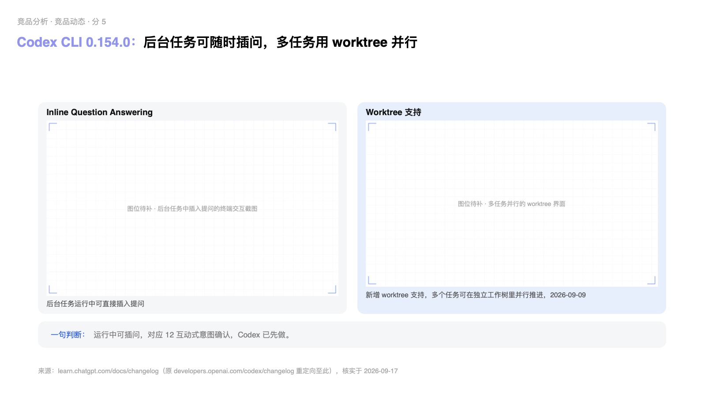
逐页原文 ↗ P130 竞品分析 · 竞品动态 · 分 5-2 原材料记录
Codex：补 Vim 操作，推理强度可选 max／ultra 图位待补 · Vim 模式下 R 替换操作示例。此项按原材料保留，未补造产品截图。
图位待补 · 推理强度档位选择界面。此项按原材料保留，未补造产品截图。
Vim 模式 R 替换/撤销 Vim 模式加入 R 替换与撤销，2026-09-09 max / ultra 推理档位 上线 max／ultra 推理档位，按任务难度选；codex mcp-server 已弃用 原材料判断 Codex 开始打磨使用细节，不只比能不能完成任务。
来源：learn.chatgpt.com/docs/changelog，核实于 2026-09-17
查看 P130 原页 · 含原材料文字与占位，非产品实拍 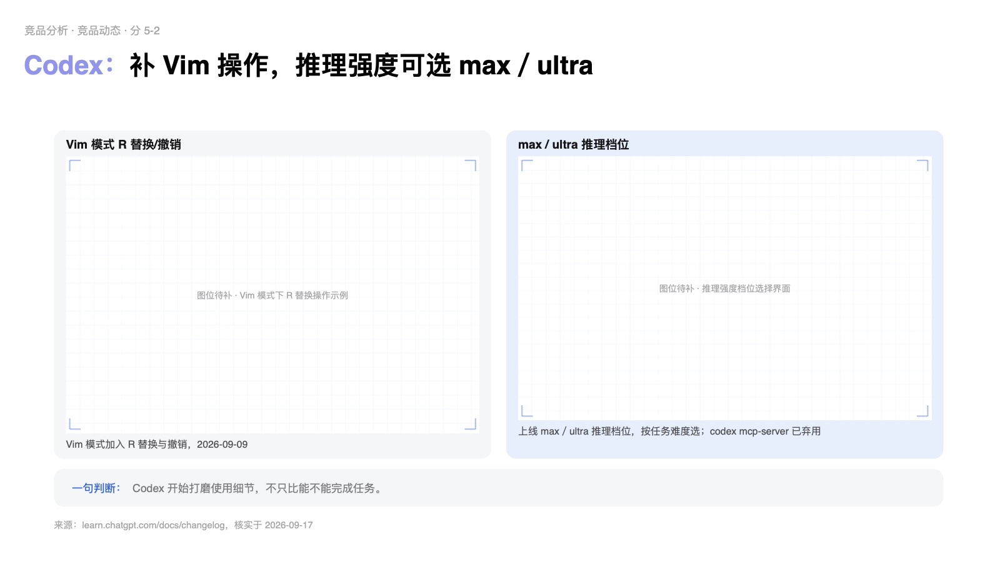
逐页原文 ↗ P131 竞品分析 · 竞品动态 · 分 6 原材料记录
Xcode 27：MCP 扩到调试与构建，自带的 Skill 能导出给别的 Agent 用 MCP 扩到调试、scheme、构建设置 官方原文 “The Xcode MCP server has been updated with new tools that allow agents to debug projects by manipulating the active run state, interacting with and reading the contents of the debugger console; listing and switching between available schemes and run destinations and inspecting and modifying build settings, compiler flags, entitlements, and Info.plist keys.” Xcode 27 Release Notes · Coding Intelligence · New Features 外部 Agent 能控制运行、读调试台、切 scheme、改构建设置和 Info.plist Skill 一条命令导出 官方原文 “And to use skills in other tools, you can export the ones Xcode uses with 'xcrun agent skills export'. This will create markdown files that you can then import in your workflows.” WWDC26 · Modernize your UIKit app · 15:05 xcrun agent skills export 把 Xcode 用的 Skill 导成 Markdown，别的工具可以导入 原材料判断 调试、构建都开放给外部 Agent，对应 23 IDE 对外开放编译调试能力。
来源：developer.apple.com/documentation/xcode-release-notes/xcode-27-release-notes；developer.apple.com/videos/play/wwdc2026/278，核实于 2026-09-25。已知局限：Skill 数量官方未列明（第三方统计为 7 个），本页不写。
查看 P131 原页 · 含原材料文字与占位，非产品实拍 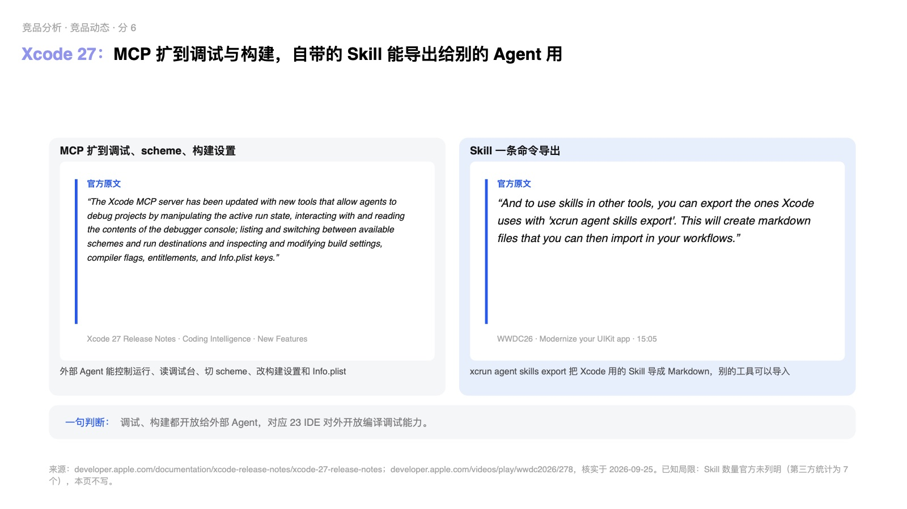
逐页原文 ↗ P132 竞品分析 · 竞品动态 · 分 6-2 原材料记录
Xcode 27：计划先批准再动手，计划、改动和预览并排看 计划先批准再执行 官方原文 “Plans appear as editable Markdown artifacts next to the conversation. You can use dedicated UI to review, annotate, discuss changes to the plan, and approve before the agent proceeds.” Xcode 27 Release Notes · Coding Intelligence · New Features 计划是可编辑的 Markdown，放在对话旁边，可批注、讨论，批准后 Agent 才动手 Canvas 并排显示改动和预览 官方原文 “Conversations with coding agents feature interactive planning, multiturn Q&A, and a canvas that can render Markdown and display code changes and previews right alongside.” Apple Newsroom · 2026-06 · Apple aids app development with new intelligence frameworks and advanced tools 对话旁边的 canvas 渲染 Markdown，代码改动和预览并排显示 原材料判断 计划先批再做，对应 12 互动式意图确认；两家直接对标都已有，DevEco 是补齐。
来源：Xcode 27 Release Notes（developer.apple.com）；Apple Newsroom 2026-06（apple.com/newsroom），核实于 2026-09-25。已知局限：“端侧 Neural Engine 离线补全”只见于第三方报道，Apple 官方页面未查到，本页不写。
查看 P132 原页 · 含原材料文字与占位，非产品实拍 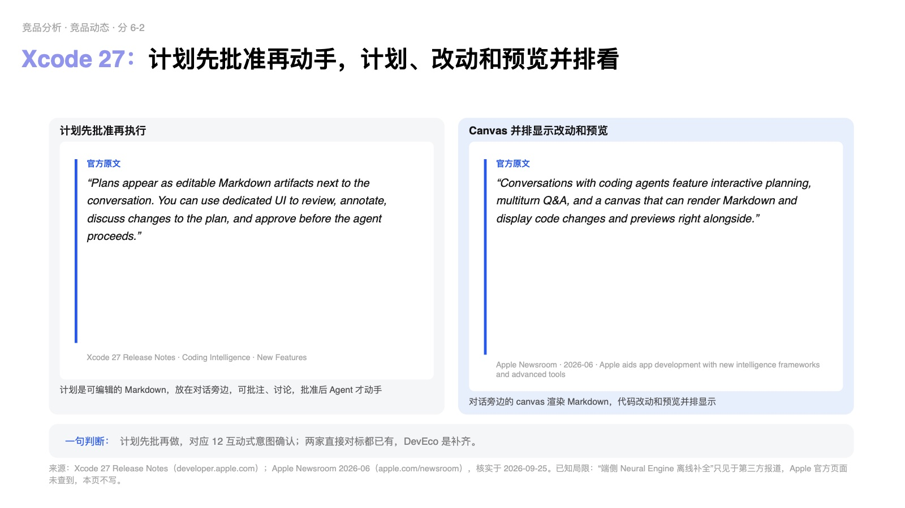
逐页原文 ↗ P133 竞品分析 · 竞品动态 · 分 7 原材料记录
Android Studio Quail 4：内置 Gemma 4 本地推理，23 个 Skills 可导出 图位待补 · 本地推理开关设置界面。此项按原材料保留，未补造产品截图。
图位待补 · Agent Skills 导出列表。此项按原材料保留，未补造产品截图。
Gemma 4 本地推理 Gemma 4 本地推理内置，不联网也能跑基础模型能力 23 个 Agent Skills 导出 23 个 Android Agent Skills 可导出到 CLI，团队复用 原材料判断 Android Studio 每个版本成组交付，不是单点补功能。
来源：Android Studio 官方 release notes，核实于 2026-09-17
查看 P133 原页 · 含原材料文字与占位，非产品实拍 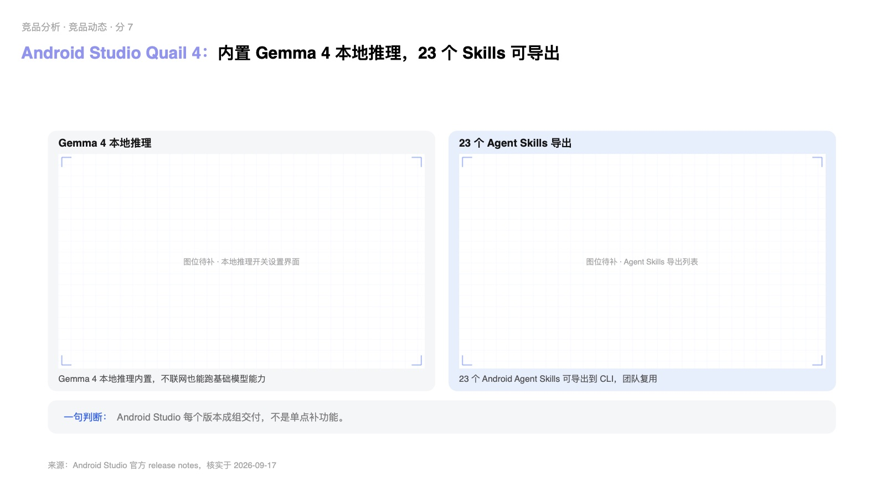
逐页原文 ↗ P134 竞品分析 · 竞品动态 · 分 7-2 原材料记录
Android Studio：会话分三档状态，改动先给摘要 图位待补 · 多任务并行实时状态视图。此项按原材料保留，未补造产品截图。
图位待补 · 改动摘要卡片截图。此项按原材料保留，未补造产品截图。
Agent Mode 并行状态 多个 Agent 并行，列表分在干／在等你／干完待审三档 Summary of Changes 改动先出摘要；模型可选 Gemini／Anthropic／OpenAI／本地 原材料判断 三档状态与改动摘要已是及格线，01、06／13 要在此之上做。
来源：Android Studio 官方 release notes，核实于 2026-09-17
查看 P134 原页 · 含原材料文字与占位，非产品实拍 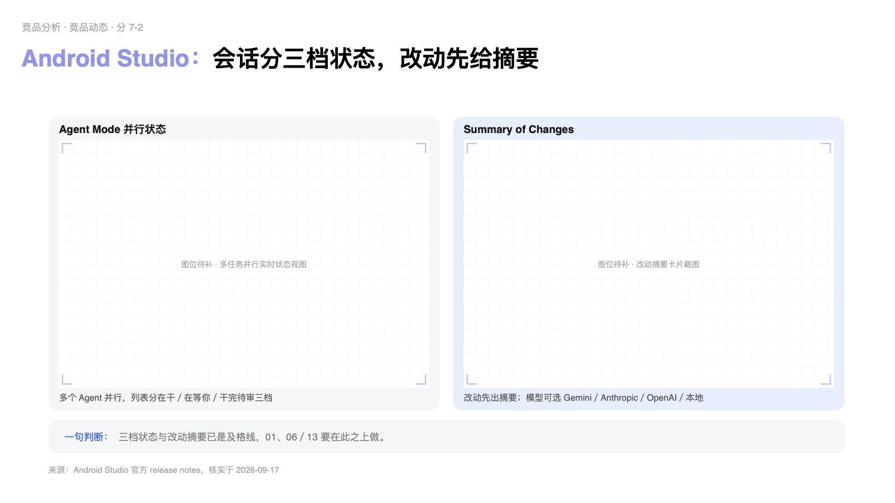
逐页原文 ↗ P135 竞品分析 · 竞品动态 · 分 8 原材料记录
JetBrains 定名 Air：AI 是默认工作流，非可选增强 Public Preview 时名称未定，现已正式定名「AI IDE Air」 三条理念：AI 即默认工作流、确定性与可解释性、代码主导权归开发者 Roadmap 列四项在途能力，如 Multiple Agents，多数尚未兑现 原材料判断 用“确定性与可解释性”回应对 AI 不透明的担心；未 GA，暂不下结论
AI IDE Air 官方 Roadmap：Multiple Agents 等四项在途能力 来源：用户提供的官方发布物料（定位文案＋Roadmap 截图），核实于 2026-09-17；GA 日期未见官方公告，按「已知局限」处理
查看 P135 原页 · 含原材料截图 / 图表 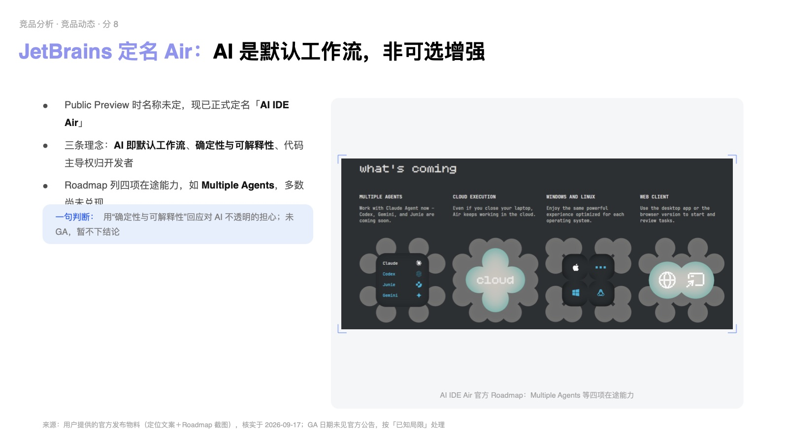
逐页原文 ↗ P136 竞品分析 · 竞品动态 · 分 8-2 原材料记录
AI IDE Air：四家 Agent 任选其一，或订阅打包 「连接你的 Agent」页面四选一激活：Codex／Claude Agent 等 也可直接订阅 JetBrains AI／Ultimate 打包，一次拿全部 界面证据：印证「协议开放」页结论 原材料判断 先让用户选 Agent，再卖套餐；IDE 不只推自家 Agent
AI IDE Air「连接你的 Agent」设置页：四家 Agent 四选一，或订阅打包方案 来源：用户提供截图（JetBrains AI IDE Air 连接 Agent 界面），核实于 2026-09-17
查看 P136 原页 · 含原材料截图 / 图表 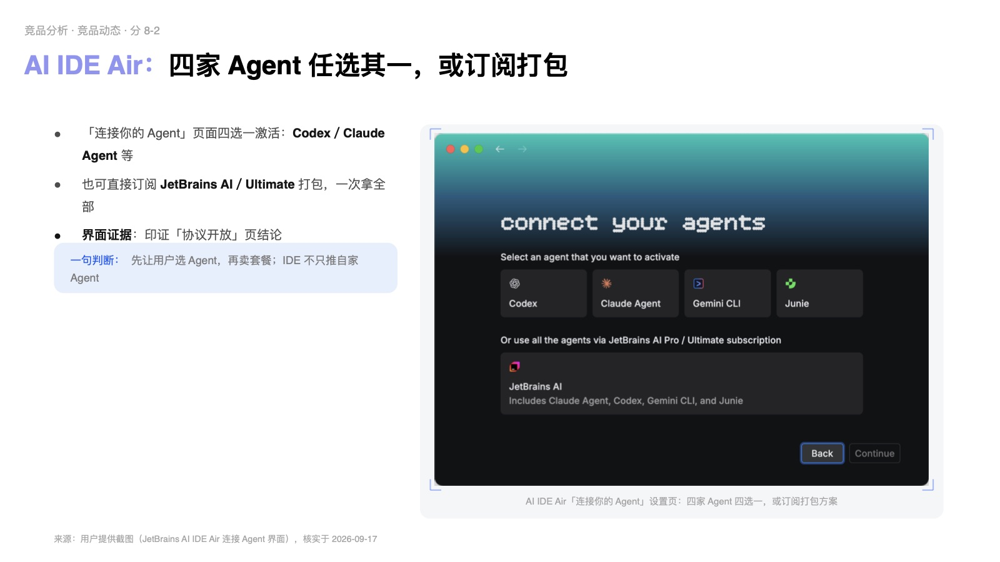
逐页原文 ↗ 04
新兴产品与相邻领域 从编码 Agent 延伸到编排工作台、结构可视化、设计交付与鸿蒙专用工具。Smart Flow 与 Figma Motion 属相邻领域参考，不按编码 IDE 直接排名。
P119 竞品分析 · 案例 原材料记录
DeepSeek Harness（DSH）：三个多月从无界面的内核，走到官方桌面端 06-10 开仓 微内核，一切皆插件，没有界面 06-16 ACP 桥 从 Zed 等编辑器里驱动，自己不做界面 07-19 Web UI dsh web 在浏览器里起工作台 07-22 CLI 按 profile 启动 web、headless、tui 08-17 首个公开版 0.1.0-rc.7，npx 一行起 Web UI 08-28 官方开始打包 此前社区已出 4–5 个第三方桌面壳 09-24 桌面端预览 Win、Mac M 系列；免装 Node、免开终端 09-29 官网上线 deepseek.com/harness 开放下载：“现在，开箱即用” 命令行：按配置启动，可后台跑任务 Web：本地工作台，左栏会话、中间对话 桌面端（09-29）：新增插件与自动化任务 来源：deepseek-harness 仓库提交记录（06-10～09-24）；IT之家（09-25）；53AI（09-18，二手）；本地运行 dsh 截图与官网截图（用户提供）。
查看 P119 原页 · 含原材料截图 / 图表 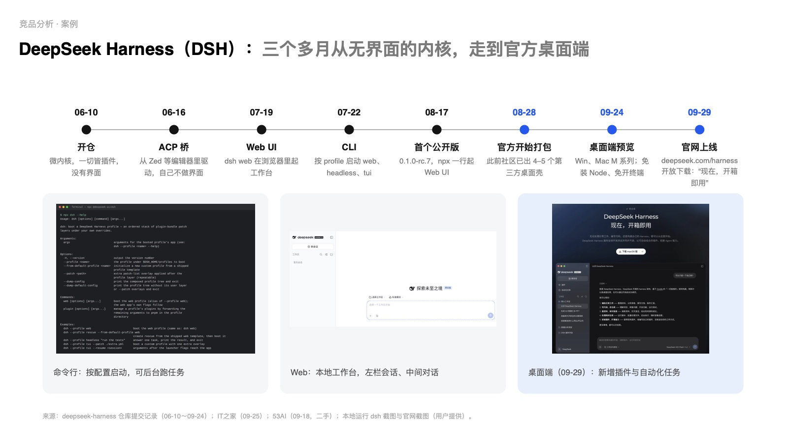
逐页原文 ↗ P120 竞品分析 · 单品深挖 原材料记录
微信开发者工具：七组 Skill 经 CLI 与 MCP 开放给外部 Agent 图位待补 · 微信侧 wechatide CLI 命令调用示例。此项按原材料保留，未补造产品截图。
图位待补 · wechatide CLI 执行中的终端状态输出。此项按原材料保留，未补造产品截图。
来源：developers.weixin.qq.com / dev.weixin.qq.com 官方文档，核实于 2026-09-14
查看 P120 原页 · 含原材料文字与占位，非产品实拍 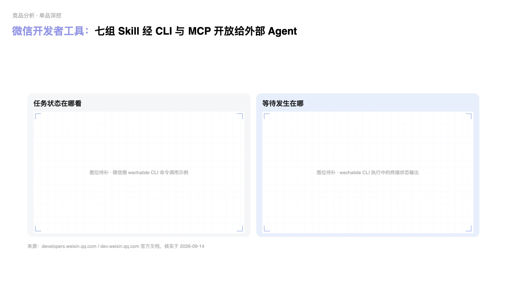
逐页原文 ↗ P121 竞品分析 · 单品深挖 原材料记录
微信开发者工具（续）：改动审阅交给 Git，服务外部 Agent 图位待补 · 微信侧改动推给 Git 后的 diff 视图。此项按原材料保留，未补造产品截图。
图位待补 · 外部客户端（CodeBuddy/Cursor/Claude）连接调用示例。此项按原材料保留，未补造产品截图。
审阅与回退落在哪 其他 IDE：各家至少有 diff 或专门面板 微信侧：整体交给 Git，分不出这次 AI 改了什么 服务的是谁 其他 IDE：自家 IDE 内置的 Agent 微信侧：CodeBuddy · Cursor · Claude 等外部客户端 代价：IDE 里看不到任务状态，这正是 01 Agent Team · 13 AI 协作时间轴 要补的：即使 IDE 只被当工具调用，过程也要看得见。 来源：developers.weixin.qq.com / dev.weixin.qq.com 官方文档，核实于 2026-09-14
查看 P121 原页 · 含原材料文字与占位，非产品实拍 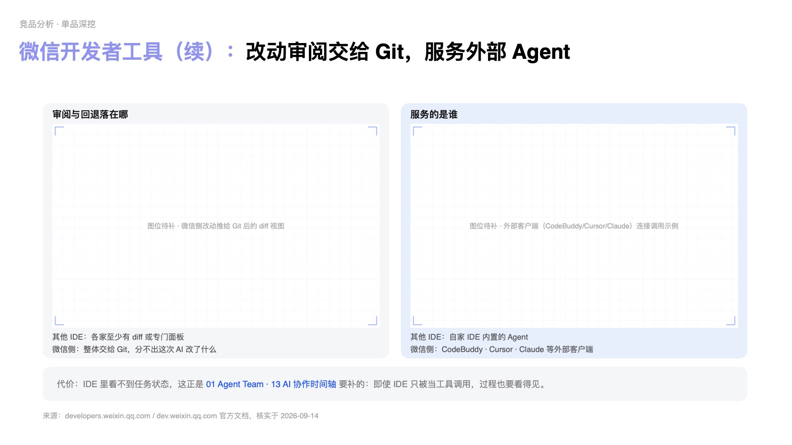
逐页原文 ↗ P137 竞品分析 · 新兴产品透视 1 原材料记录
Flare：用依赖图代替文件树，多 Agent 改代码实时可见 MIT 开源，支持 Claude Code／Codex／opencode／aider 文件是节点、import 是边，Agent 每改一次，图即时更新 三种视图看同一份数据：Canvas、Wheel、Districts 十种 Lens 决定颜色含义，Hotspots（改动频次×复杂度）最实用 原材料判断 别家做 Agent 的界面，Flare 做代码库的界面，结构随改动更新。
Wheel 视图：可拖拽单环弦图，文件是节点、import 是边（用户提供截图） 来源：github.com/AlgoNoRhythm/Flare（MIT），核实于 2026-09-17。版本未对齐：资料称 v2.0.0／2026-08-30，Releases 仅至 v1.1.0／2026-08-16，package.json 为 2.1.0。Canvas 视图未采到实截，本页只放 Wheel。
查看 P137 原页 · 含原材料截图 / 图表 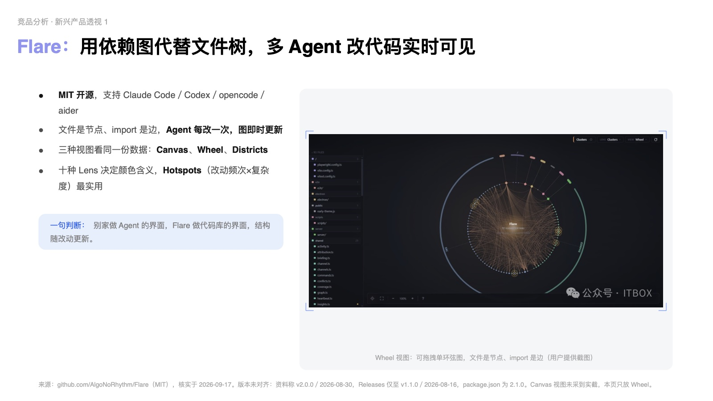
逐页原文 ↗ P138 竞品分析 · 新兴产品透视 1 原材料记录
Flare：每个 Agent 有唯一编号，改动按批审查，风险改动单独排队 身份：按 MCP 会话分配唯一名（如 Claude 1），编号不复用 按批审查：只监听不拦截，按 burst（一批改动）审，可一键撤销 风险排队：高风险改动置顶；影子 git 历史让每批可回滚 原材料判断 多 Agent 并行时，谁改的、风险多大一眼可见，每批可回滚
图位待补 · Agent 身份列表、Channel 审查面板、风险 chip 与影子历史 diff（待补实拍）。此项按原材料保留，未补造产品截图。
来源：github.com/AlgoNoRhythm/Flare，核实于 2026-09-17；版本口径说明见上一页
查看 P138 原页 · 含原材料文字与占位，非产品实拍 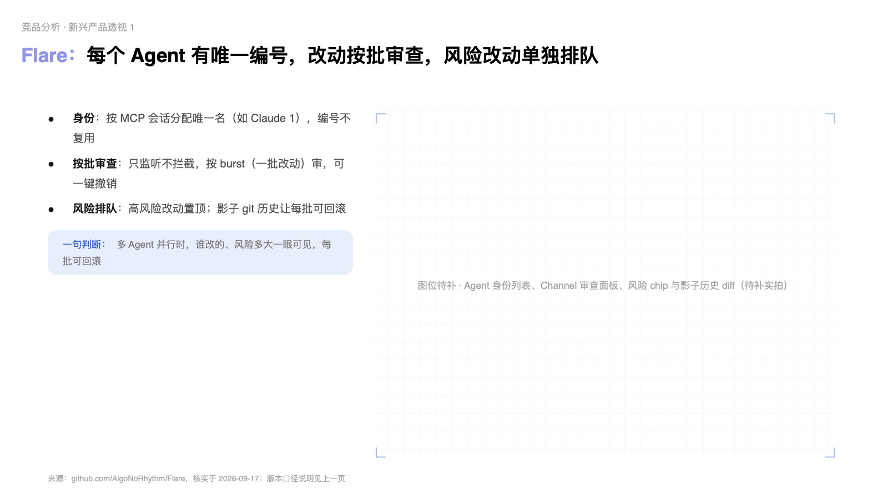
逐页原文 ↗ P139 竞品分析 · 新兴产品透视 2 原材料记录
Windsurf：VS Code 底子的常驻 Agent 编辑器，已归 Cognition Cascade 是常驻式 Agent：理解全代码库，自主执行多步任务 底子是 VS Code，定位「AI 是一等协作者，不是自动补全插件」 所有权几经变化，2025 年底被 Cognition（Devin 的公司）接手 [C] 证据等级，综合第三方评测，未逐条核对官方一手资料 原材料判断 思路与 VS Code Agent Host 相近；刚换东家，后续投入待观察
图位待补 · Cascade Agent 工作流程界面（第三方评测配图，待补官方实拍）。此项按原材料保留，未补造产品截图。
来源：deployhq.com/guides/windsurf、codegen.com/ai-tools/windsurf 等第三方评测综合（[C] 证据等级），核实于 2026-09-17
查看 P139 原页 · 含原材料文字与占位，非产品实拍 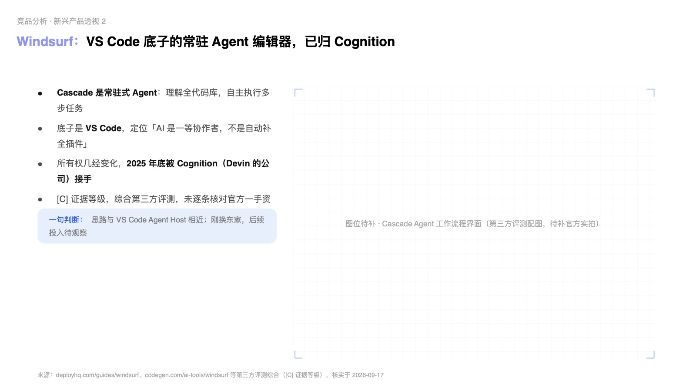
逐页原文 ↗ P140 竞品分析 · 新兴产品透视 3 原材料记录
Zed：Rust 重写内核，Agent 面板多会话、改动可回滚 官方三条主张：Fast、Intelligent、Collaborative 别家界面趋同，Zed 花两年从零重写内核，押注底层性能 Agent Panel 按项目管理多线程会话，每次改动可设检查点回滚 原材料判断 别家外观趋同，Zed 从内核做差异，AI 改动记录也最细。
左：zed.dev 首页三条主张；右：VS Code／Cursor／CodeBuddy 界面高度趋同 来源：zed.dev 官方站点＋zed.dev/docs/ai/agent-panel（官方文档）＋用户提供的第三方评测视频截图，核实于 2026-09-17
查看 P140 原页 · 含原材料截图 / 图表 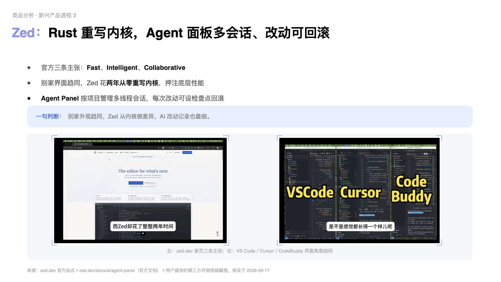
逐页原文 ↗ P141 竞品分析 · 新兴产品透视 3 原材料记录
Zed：外部 Agent、MCP、模型供应商都由用户自选 External Agents 并列 Claude Code／Codex 等，可继续添加 LLM Providers 列了 Kimi／Anthropic 等十余家，可自行添加 界面证据：印证「协议开放」页结论 原材料判断 第三方 Agent 与十余家模型都能自选，开放得最彻底。
Zed Settings：External Agents／MCP Servers 等三栏并列 来源：用户提供截图（Zed 桌面客户端 Settings 页面），核实于 2026-09-17
查看 P141 原页 · 含原材料截图 / 图表 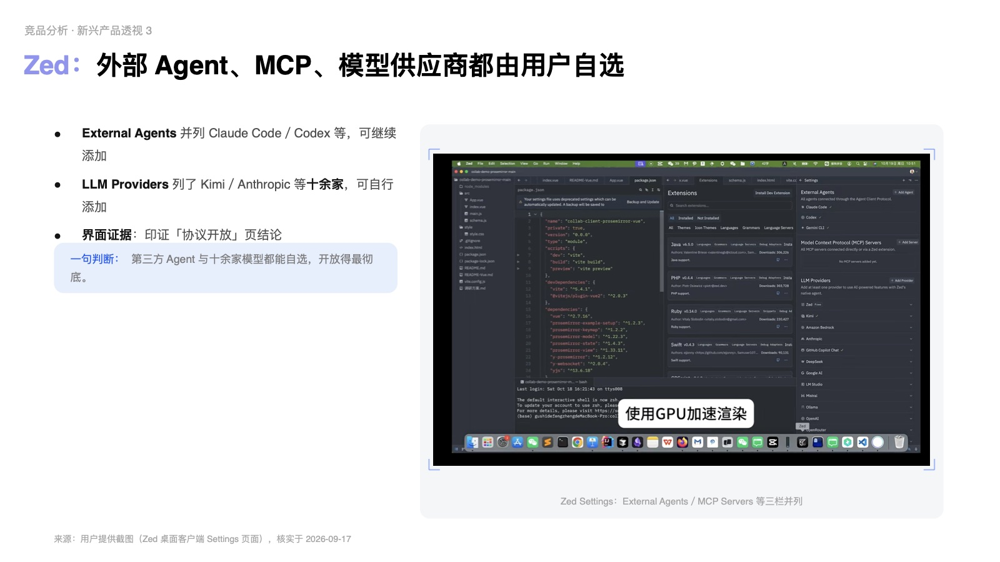
逐页原文 ↗ P142 竞品分析 · 新兴产品透视 4 原材料记录
Replit Agent 4：幻灯片／网站／App 并行构建 Agent 4 从只做 Web 应用，扩到幻灯片、网站、移动应用 Design Mode 改为 Design Canvas，各类产物共用一块无限画布 协作改为共享项目：各自聊天线程＋共享 Kanban 看板 规划与构建并行，不再顺序执行；任务跑在隔离环境 原材料判断 团队和 Agent 共用一块看板，本轮调研产品中仅此一家
图位待补 · Replit Agent 4 Design Canvas 与协作 Kanban 看板界面（待补）。此项按原材料保留，未补造产品截图。
来源：replit.com/blog/whats-changed-agent3-to-agent4，核实于 2026-09-17
查看 P142 原页 · 含原材料文字与占位，非产品实拍 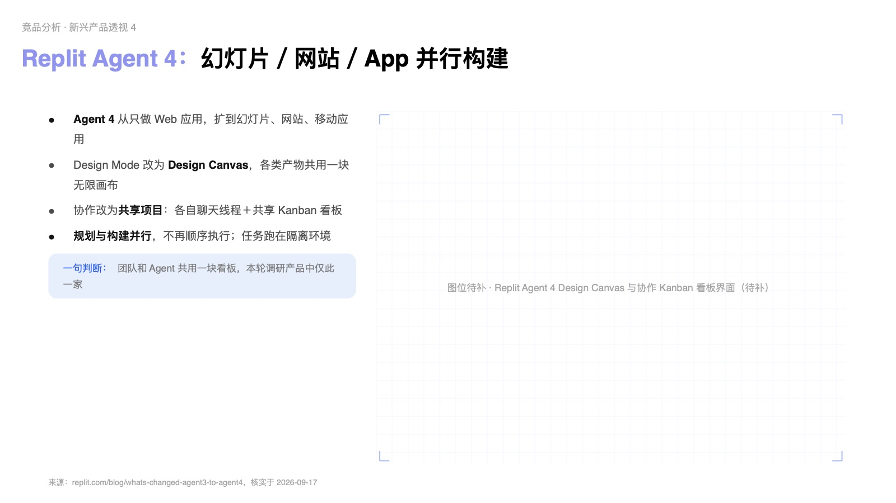
逐页原文 ↗ P143 竞品分析 · 新兴产品透视 5 原材料记录
Smart Flow：开源可视化工作流编排台，非编码 Agent GPL-3.0 开源，定位「面向开发者的 AI 原生工作流编排平台」 画布提供十余种节点类型，拖拽连线即可搭流程 每个节点配模型与提示词；可看输入 JSON 与逐节点结果、耗时 原材料判断 不改源代码，只编排模型与工具，和编码 Agent 不是一类
左：智能客服分流工作流节点画布；右：运行面板，逐节点执行结果与耗时 来源：微信公众号文章（mp.weixin.qq.com/s/Lw4wlaPIqV_72k3dpsHSXA）及项目开源仓库，核实于 2026-09-17
查看 P143 原页 · 含原材料截图 / 图表 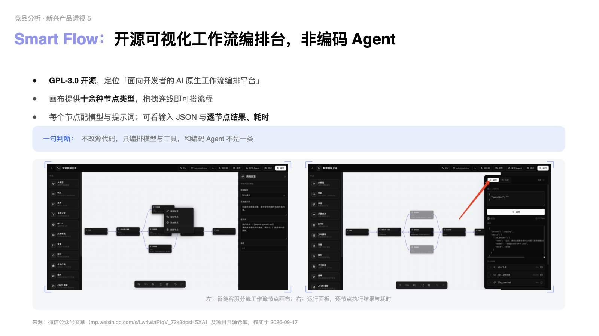
逐页原文 ↗ P144 竞品分析 · 新兴产品透视 6 原材料记录
豆包 MarsCode：字节免费入口，云端 IDE 与插件双形态 字节跳动出品，云端 IDE ＋ 编辑器插件两形态并行，免费使用 覆盖补全、生成、问答、Bug 修复，号称支持 100+ 编程语言 第三方称底层是 GPT-4，与「豆包」命名不符，未核实 原材料判断 云端 IDE 拉新、插件覆盖老用户，与腾讯 CodeBuddy 打法相近
来源：aihub.cn/tools/coding/marscode（第三方综合介绍，[C] 证据等级，未逐条核对 marscode.cn 官方一手资料），核实于 2026-09-17
查看 P144 原页 · 含原材料截图 / 图表 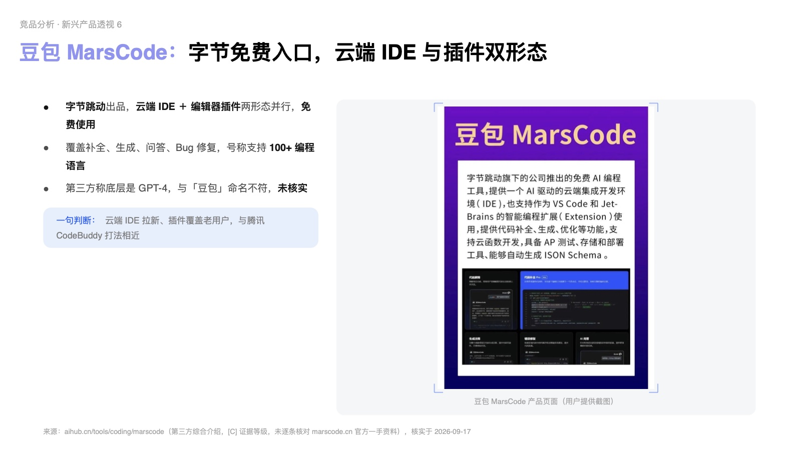
逐页原文 ↗ P145 竞品分析 · 新兴产品透视 7 原材料记录
代码小浣熊：商汤较早的企业级 AI 编程助手，三形态并存 商汤科技出品，国内较早一批 AI 编程助手，覆盖 30+ 语言 三种形态并存：侧边栏／编辑器内／终端面板，集成主流 IDE 定位企业级研发；官方未标模型型号，未见写明「日日新」 原材料判断 侧边栏、编辑器内、终端三形态都做，顺着开发者原有习惯。
代码小浣熊 Raccoon 产品页面（用户提供截图） 来源：sensetime.com/cn/product-detail（商汤官方）＋ aihub.cn/tools/coding/raccoon（第三方综合），核实于 2026-09-17
查看 P145 原页 · 含原材料截图 / 图表 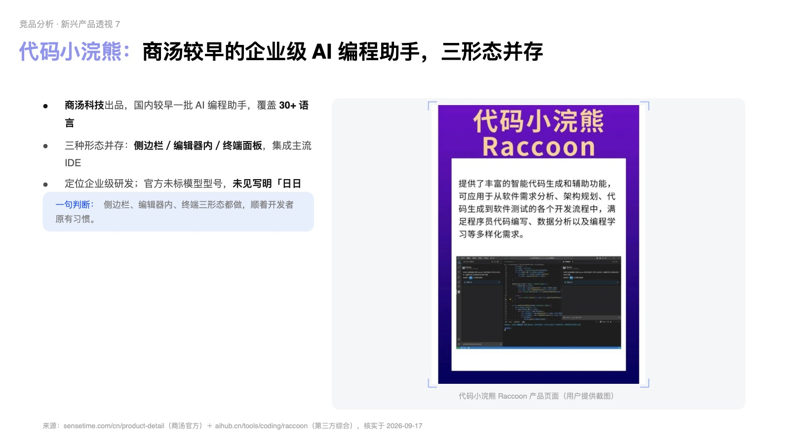
逐页原文 ↗ P146 竞品分析 · 新兴产品透视 8 原材料记录
CodeBuddy IDE：腾讯从插件升级为独立 IDE，主打一句话生成应用 腾讯出品，从插件升级为独立 IDE，国内版、国际版接的模型不同 「规划-设计-开发-部署」四步打通，含 Figma 一键转代码（D2C） 官方叙事强调「整个流程可以完全不写一行代码」 原材料判断 一个 IDE 走完规划到部署，含 D2C 与自动配后端，国内覆盖最全
CodeBuddy IDE 早期发布海报：多模型、D2C、一键部署 来源：官方发布物料（用户提供）；模型：codebuddy.cn 官方文档（支持 models.json 自接模型）、InfoQ 写作社区 CodeBuddy 文章、腾讯新闻 2026-01-26，核实于 2026-09-25。已知局限：模型名单来自二手报道，官方文档未列全；海报为早期物料，写的 Claude 当前国际版是否仍在列未证实
查看 P146 原页 · 含原材料截图 / 图表 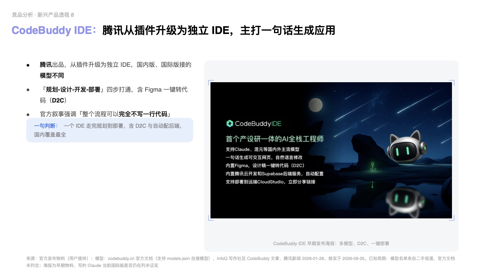
逐页原文 ↗ P147 竞品分析 · 新兴产品透视 8 原材料记录
CodeBuddy IDE 实测：一句话生成可运行的宝可梦图鉴 实测「Pokedex 宝可梦图鉴」，一句话需求跑出六项功能 自动选型 React 18 + TypeScript、Vite 5 等，并给出规范目录结构 应用直接在内置预览窗口跑通，全程对话完成，不需要手写代码 原材料判断 产出的是可继续开发的项目骨架，不是一次性 Demo
CodeBuddy IDE 实测：对话生成的「宝可梦图鉴」在内置预览窗口运行 来源：用户提供的实测截图（CodeBuddy IDE 实际运行界面），核实于 2026-09-17
查看 P147 原页 · 含原材料截图 / 图表 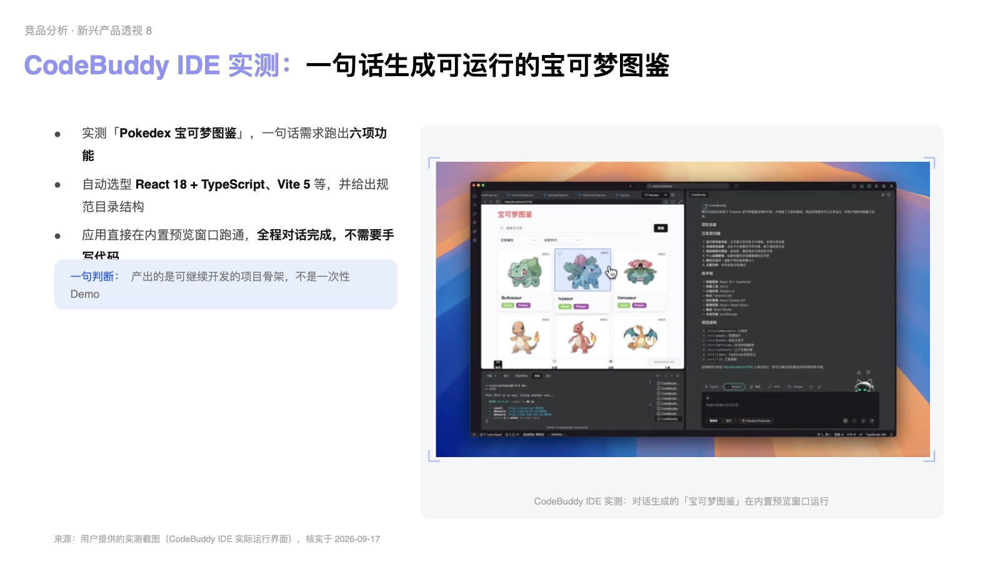
逐页原文 ↗ P148 竞品分析 · 新兴产品透视 8 原材料记录
CodeBuddy 插件版：独立 IDE 之前，先把插件铺到数十款主流编辑器 以混元＋DeepSeek 为底座，覆盖规划-设计-开发-测试-部署五阶段 核心功能：代码补全、单测生成、代码评审、Craft 开发智能体等 集成 CloudStudio Web IDE，另支持数十款主流 IDE 插件 原材料判断 先用插件覆盖老用户，再推独立 IDE 做全流程，与豆包 MarsCode 打法相近
图位待补 · CodeBuddy 插件版全流程功能面板（腾讯云官方配图，待补）。此项按原材料保留，未补造产品截图。
来源：cloud.tencent.com/developer/article/2677102（腾讯云开发者社区），核实于 2026-09-17
查看 P148 原页 · 含原材料文字与占位，非产品实拍 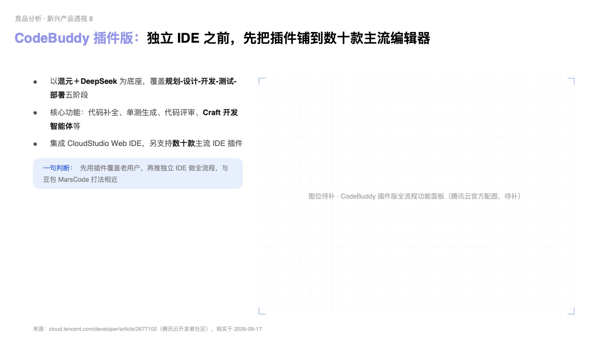
逐页原文 ↗ P149 竞品分析 · 新兴产品透视 9 原材料记录
Qoder：阿里把「看懂一个陌生仓库」做成产品功能 阿里巴巴出品，2025 年秋上线，公开测试期、全功能免费 两种模式：Chat Agent Mode 配对，Quest Mode 异步委派 核心功能：Repo Wiki 自动生成项目知识库，Action Flow 可视化执行计划 Repo Wiki 生成慢，中型项目约 2 小时，6000 文件以上有规模限制 原材料判断 把「先看懂再动手」做成独立功能，便于人和 Agent 接手陌生仓库
图位待补 · Qoder Quest 模式与 Repo Wiki 界面（官方/第三方评测配图，待补）。此项按原材料保留，未补造产品截图。
来源：aliyun.com/product/qoder（阿里云官方）＋ jimmysong.io/blog/qoder-alibaba-ai-ide-personal-review（第三方实测），核实于 2026-09-17
查看 P149 原页 · 含原材料文字与占位，非产品实拍 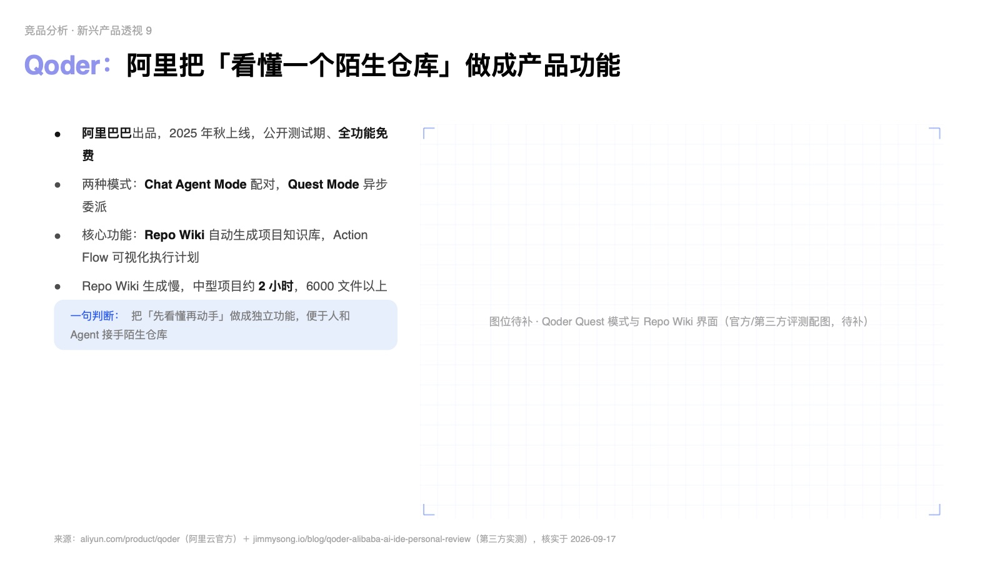
逐页原文 ↗ P150 竞品分析 · 新兴产品透视 10 原材料记录
CatPaw：美团免费 IDE，沿用 VS Code 习惯，前端可点选修改 美团出品，免费使用，内置 kimi／glm 等多款模型可选 兼容 VS Code 项目管理，建工作区、切项目、克隆仓库路径不变 三处细节：补全少出冗余代码、Ctrl+K 行内改／问、三种对话模式 可视化前端编辑：在预览里点选元素，AI 直接定位修改 原材料判断 靠免费和不改习惯争取老用户；点选改前端较少见
CatPaw 启动页与侧边栏模型选择列表（用户提供截图） 来源：微信公众号「不写程序的程序猿」（mp.weixin.qq.com/s/Iy3cauc3mZWAdxmw96oPPAA，[C] 证据等级），核实于 2026-09-17
查看 P150 原页 · 含原材料截图 / 图表 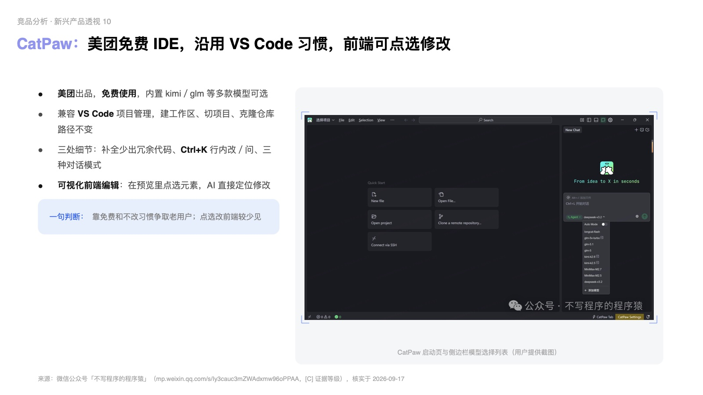
逐页原文 ↗ P151 竞品分析 · 新兴产品透视 11 原材料记录
Orca：25＋种 Agent 各跑独立 worktree MIT 开源，YC 孵化，GitHub 60.4K star 同时运行 25＋种编码 Agent，各装进独立 git worktree 手机端 Orca Mobile：远程查看 Agent、完成通知、审批 桌面端支持 macOS／Windows／Linux，可无头模式跑服务器，完全免费 原材料判断 worktree 隔离、支持 25＋种 Agent、手机看进度，同类覆盖最全
左：三栏并排的多 Agent 终端会话；右：GitHub 仓库页 来源：github.com/stablyai/orca（MIT，官方仓库首页），核实于 2026-09-17
查看 P151 原页 · 含原材料截图 / 图表 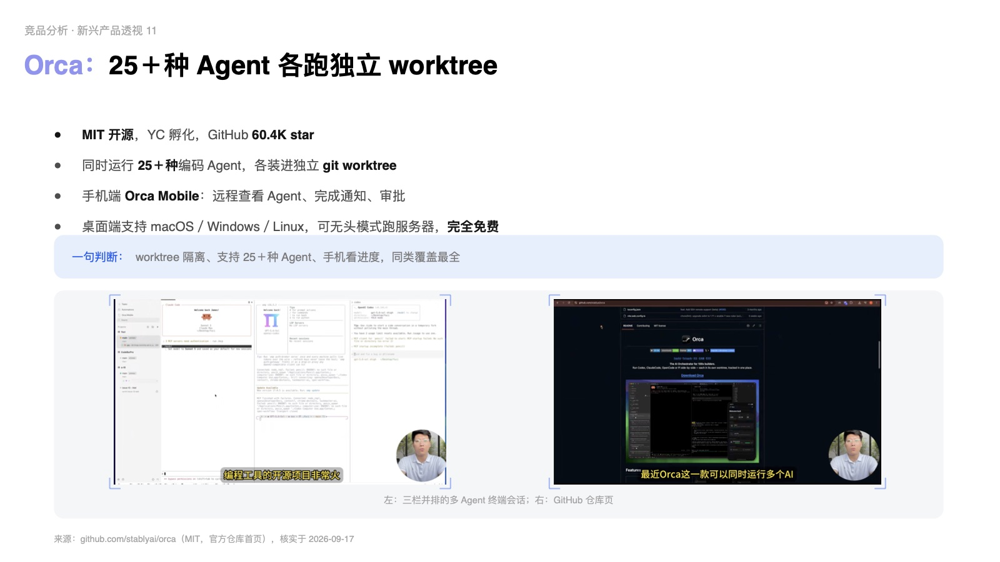
逐页原文 ↗ P152 竞品分析 · 新兴产品透视 11 原材料记录
Orca：把「审查 Agent 输出」做成产品功能 主打 Design Mode、AI 差异注释、SSH 工作树等功能 实测 2.85 万行 SwiftUI 代码库，自动拆成 6 个子系统并行跑 原材料判断 瓶颈从“怎么派活”转到“怎么审”，Orca 把审查做成了功能
实测：一次「review the iOS APP」自动拆成 6 个并行 review agent 来源：github.com/stablyai/orca（MIT，官方仓库首页 Features 部分）＋用户提供实测截图，核实于 2026-09-17
查看 P152 原页 · 含原材料截图 / 图表 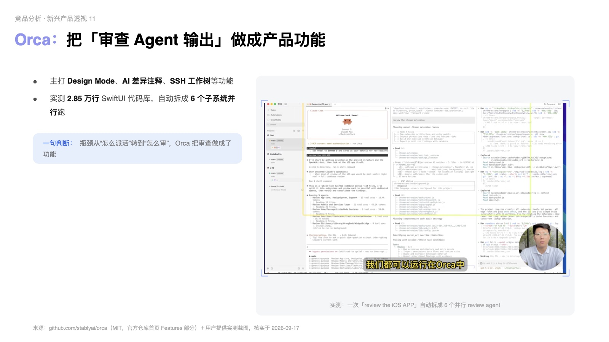
逐页原文 ↗ P153 竞品分析 · 新兴产品透视 12 原材料记录
Aider：纯终端结对编程，每次改动自动提交 Git，过程可查 Apache-2.0 开源，约 4.9 万星，直接改本地 Git 仓库 三条设计哲学：本地运行、Git 原生集成、多模型支持 用仓库地图在有限上下文里掌握结构，可跨文件修改 原材料判断 每次修改都是一次带说明的 Git 提交，靠现成 Git 让过程可查，成本最低
图位待补 · Aider 纯终端界面：命令行对话＋Git 提交记录（官方仅有动图，待补实拍）。此项按原材料保留，未补造产品截图。
来源：github.com/Aider-AI/aider（Apache-2.0，官方仓库首页）＋微信公众号文章综合介绍，核实于 2026-09-17
查看 P153 原页 · 含原材料文字与占位，非产品实拍 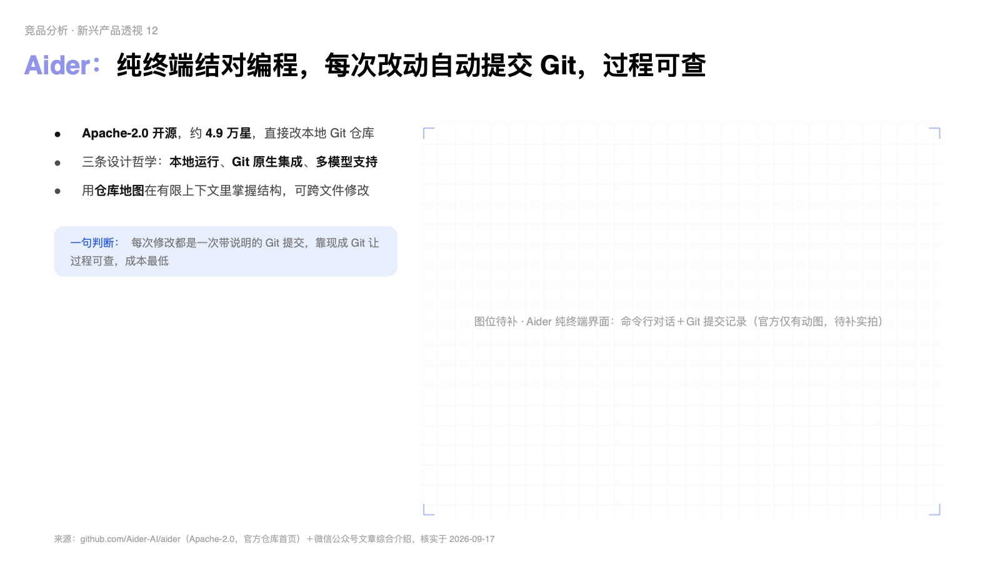
逐页原文 ↗ P154 竞品分析 · 新兴产品透视 13 原材料记录
hmharness：主打「零 IDE 完成鸿蒙开发全流程」 开源 MIT CLI，卖点「不开 DevEco Studio · 不登华为账号……」 六步流水线：脚手架→构建→签名→装机→启动→回读日志，一句命令跑通 API 知识图谱 927 d.ts／2万+ 符号防幻觉；内核 0 运行时依赖 原材料判断 唯一专做鸿蒙、公开主打“不用 DevEco Studio”的开源工具，应优先核实
hmharness 官方海报：六步流水线与核心数据条（用户提供） 来源：用户提供的官方发布海报（hmharness，开源 MIT），核实于 2026-09-17；仓库地址、团队信息与真实能力边界待核实
查看 P154 原页 · 含原材料截图 / 图表 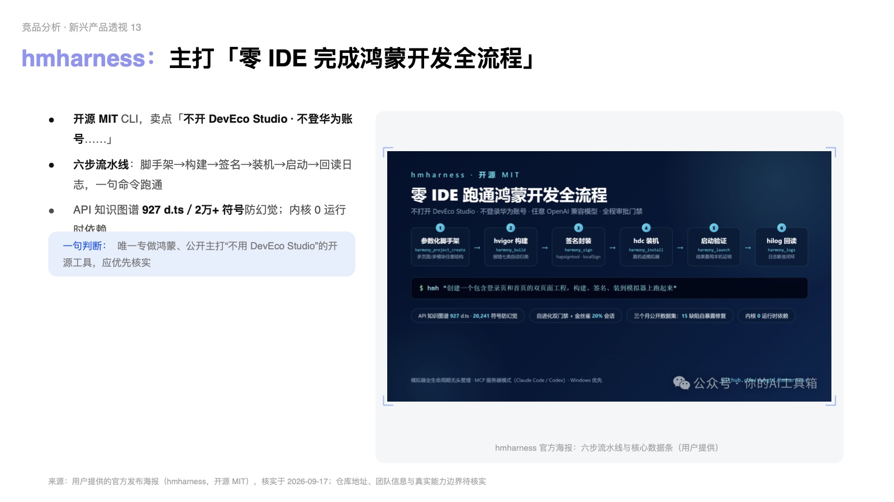
逐页原文 ↗ P155 竞品分析 · 新兴产品透视 13 原材料记录
hmharness：自进化要过测试门槛，不达标就回滚 自进化：训练门（A/B 基准）→ 保留门（防过拟合）→ 晋升，回归即回滚 新技能先以「金丝雀」进 20% 会话对照实验，不达标打回 日志公开在官网证据页，直言「越用越聪明」是机制而非已证事实 原材料判断 差异在克制：公开证据，承认“越用越聪明”尚未证实
图位待补 · 自进化流水线：训练门→保留门→金丝雀 20% 会话→晋升/回滚（暂无配图）。此项按原材料保留，未补造产品截图。
来源：用户提供的产品说明文字（自进化机制描述），核实于 2026-09-17；官网证据页与具体数据集内容未独立核实
查看 P155 原页 · 含原材料文字与占位，非产品实拍 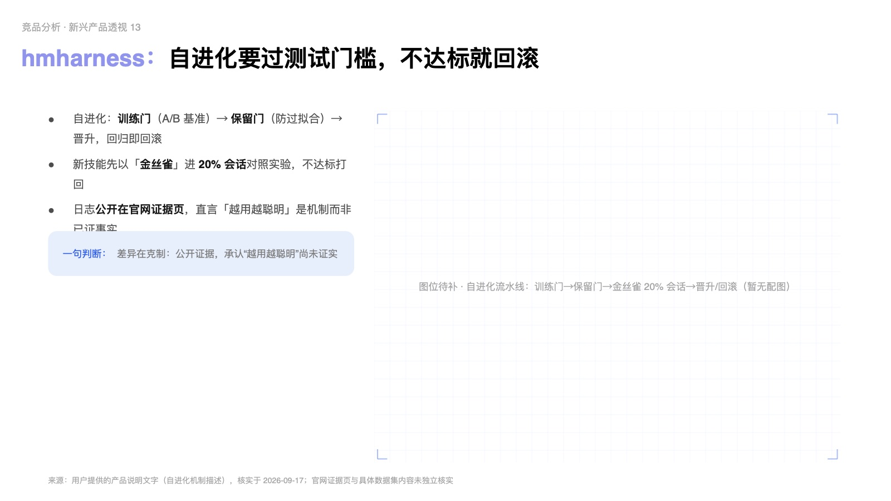
逐页原文 ↗ P156 竞品分析 · 新兴产品透视 14 原材料记录
Figma Motion：动效在画布内制作，并纳入设计系统 Config 2026 发布，所有方案开放公开测试（open beta） 画布底部时间轴：套预设或打关键帧，Auto-keyframe 随播放头自动录制 动效变量 + 动画组件：动效沉淀为设计系统变量，跨文件自动生效 Dev Mode 只读时间轴：一键复制 CSS／JSON，可经 MCP 传给 Agent 原材料判断 动效纳入设计系统、可导出代码，与 D2C 同一方向。
图位待补 · Motion 时间轴示意：关键帧、缓动面板与代码导出（待补真实截图）。此项按原材料保留，未补造产品截图。
来源：Figma 官方博客 Config 2026 Recap（figma.com/blog/config-2026-recap）、Figma Help Center「What's new from Config 2026」，核实于 2026-09-20；发布动画组件／AI 生成／高清导出需付费方案，Figma for Government 不支持
查看 P156 原页 · 含原材料文字与占位，非产品实拍 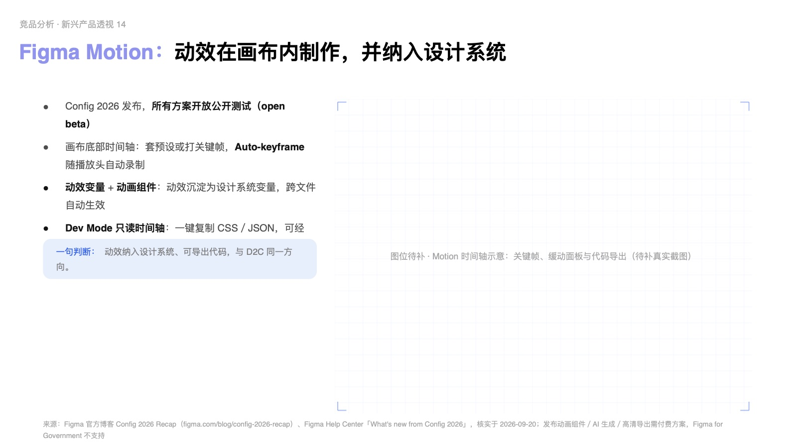
逐页原文 ↗ 09
逐页材料：原文、原图与来源 按 Keynote 物理页码完整保留。含隐藏页；P114 只作边界参考，P117 / P118 为重复页。这里的“图位待补”是原材料缺项；原页截图不等于其中已经有产品实拍。
54 / 54 页 · 主体 53 页 + 边界上下文 1 页
P114 智慧胶囊交给 AI 干活 · 24 | 方案
智慧胶囊
搭车
我们要做的
用轻量状态入口展示关键任务，优先提示待确认事项；点击回到任务详情，避免重复通知和信息堆积。
界面示意
图位待补 · 状态栏上的胶囊：最多两枚，“在等你”的排前带蓝点，点开才展开面板
主要改善
步数与切换次数
等待可见
审阅与回退
满意度
主要验证：看清状态，减少切换；关联目标：70 万 AI 用户目标。 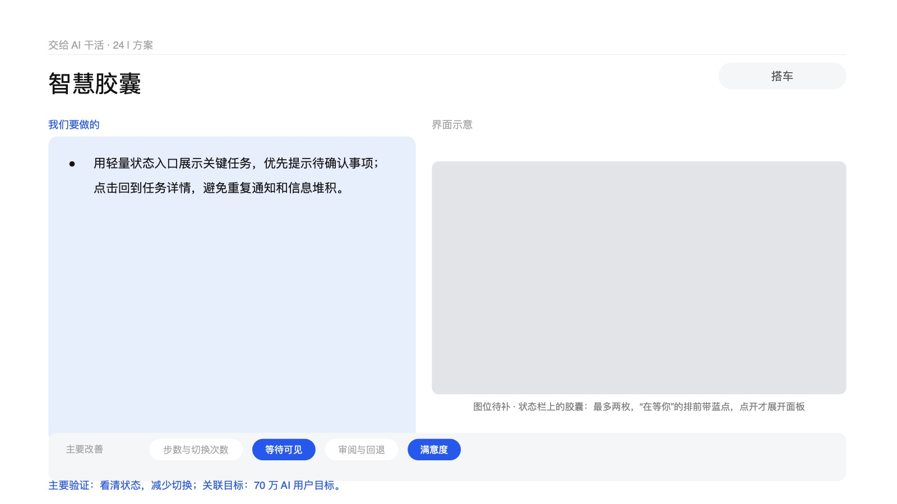
P115 体验评估策略方向四
体验评估策略
这一类不产出功能，产出判据
上面每一条都写了“主要改善哪个指标”。这一页说清楚：这四个指标各自怎么测，测的时候拿什么当尺子。没有这一层，前面的判断就只是说法。 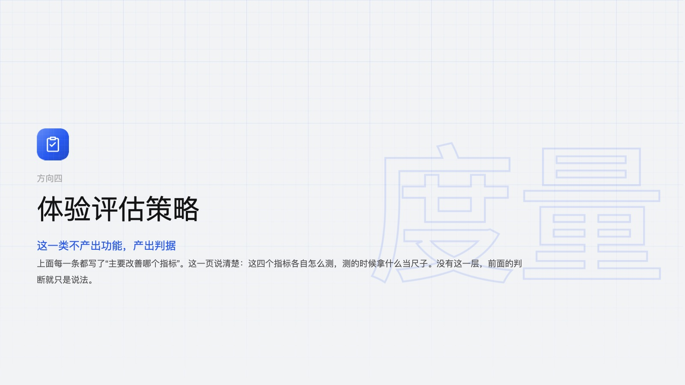
P116 四个指标，各自怎么测体验评估策略
四个指标，各自怎么测
前三个是过程指标，版本内可测、可直接设计；满意度是它们的结果，不单独作为设计目标。
步数与切换次数
01·02·03·04·05·06·09·10·12·13·15·16·18·19·20·21·22
完成一件事要点几下、在几个窗口之间来回几趟
录屏数点击与窗口切换，同一条任务跨版本比
等待可见
07·17·18·23·24
等的时候界面说了什么：在跑还是在排队、排第几位、还要多久、能不能取消
从发起到第一次给出状态的时间；等待期间界面给出的信息条数
审阅与回退
03·08·11·14·16·17·19·21
改动能不能看懂、能不能挑着退回去
一次多文件改动，看懂它改了什么并撤回，需要多少步；能不能只退其中一步
满意度
结果指标，不单列
人愿不愿意把活交给它
季度调研 + 上面三项的实测结果对照看
测的时候用同一套任务，不每次换题
五条基准任务跨期固定：改一处界面并看到结果 · 跨三个以上文件的改动审阅并回退 · 五分钟以上的长任务中途纠正 · 装一个第三方能力并调用 · 从“卡了崩了”定位并修复。 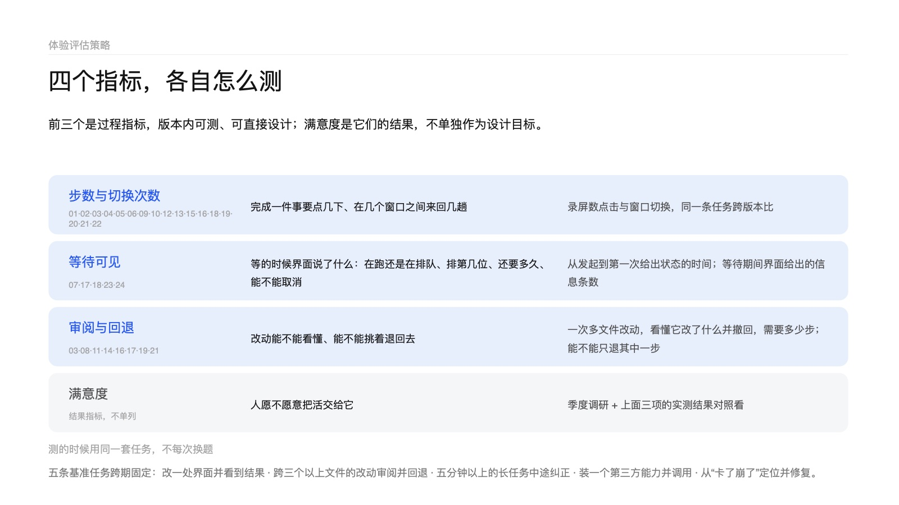
P117 Project 是长期容器，Task 是一次工作，Session 是一次运行过程，Goal 是完成标准。Context 是 AI 当前能看的材料，Sources 是依据，Outputs / Artifacts 是交付物。AI Agent 常用名词解释
Project 是长期容器，Task 是一次工作，Session 是一次运行过程，Goal 是完成标准。Context 是 AI 当前能看的材料，Sources 是依据，Outputs / Artifacts 是交付物。
谁在做事
Agent、Coding Agent、Subagent、Multi-agent
怎么推进
Plan、Build、Goal、Spec、Loop
靠什么做事
Tool Use、MCP、Connector、Plugin、Skill
英文术语 | 中文术语 | 解释 |
Project | 项目 | 长期工作空间，包含文件、知识库、规则、历史任务和项目上下文 |
Task | 任务 | 一次明确要 AI 完成的工作（修复 bug、生成网页、整理报告等） |
Session | 会话 | 一次连续交互或执行过程，比 task 更偏"运行中的过程" |
Goal | 目标 | 任务背后的完成标准——"做到什么程度才算完成" |
Prompt | 提示词 | 给 AI 的输入指令，广义上也包括系统指令、项目规则和上下文要求 |
Instruction | 指令 | 比 prompt 更偏固定行为规则，如"用中文回答""不要改无关文件" |
Context | 上下文 | AI 当前能看到的信息，包括消息、文件内容、历史摘要、工具结果等 |
Memory | 记忆 | 跨会话保存的偏好或事实（默认语言、项目技术栈、历史决策等） |
Sources | 来源 | AI 用来支撑回答或操作的材料来源（网页、文件、文档、代码片段等） |
Outputs / Artifacts | 输出与制品 | Outputs 是 AI 生成的结果；Artifact 是可独立查看、编辑、复用的一类输出 |
Spec | 规格说明 | 对目标、行为、约束和验收标准的明确描述 |
维度 | ChatGPT Work / 普通工作型 | Codex / Claude Code / 编程型 |
Project | 项目资料中心：文件、聊天、说明、研究材料、团队协作 | 代码项目或仓库：源码、配置、测试、依赖、开发规范 |
Task | 做一份报告、调研、分析表格、写文档、生成方案 | 修 bug、写功能、跑测试、改依赖、提 PR、代码审查 |
Goal | 交付物可读、完整、符合业务目的 | 代码能运行、测试通过、行为正确、改动可审查 |
Context | 文档、网页、上传文件、聊天历史、业务背景 | 代码库、终端输出、错误日志、Git diff、测试结果 |
Sources | 资料来源、网页引用、上传文件、Google Drive、Slack 等 | 文件路径、代码片段、日志、issue、设计文档、API 文档 |
Outputs | 文档、表格、PPT、报告、网站、总结、计划 | 代码补丁、测试结果、commit、PR、release notes、修复说明 |
Tools | 搜索、文件读取、文档、表格、演示、网页和连接器 | 终端、编辑器、Git、测试框架、包管理器、MCP、IDE |
Permission | 主要保护文件、应用、外部服务和敏感资料 | 额外保护代码修改、命令执行、依赖安装和 Git 操作 |
Session | 一次完成材料型任务的工作过程 | 一次开发迭代：读代码、改文件、跑测试、修失败、汇报 |
Memory | 记住偏好、项目背景、写作风格、业务上下文 | 记住构建命令、架构约定、调试经验、代码规范 |
Review | 检查内容是否准确、清楚、可交付 | 检查 diff、测试、回归风险、边界条件和安全影响 |
英文术语 | 中文术语 | 解释 |
Loop | 循环 | Agent 反复执行"观察→思考→行动→检查"的过程 |
Compaction | 压缩 | 上下文太长时把历史内容压缩成摘要，保留关键决定和当前状态 |
Token | 令牌 | 模型处理文本的计量单位，接近"字或词片段"，上下文容量和费用都相关 |
MCP | Model Context Protocol | 一种让 AI 连接外部工具和数据源的协议 |
Connector | 连接器 | 连接外部服务的入口（Google Drive、Slack、GitHub 等） |
Plugin | 插件 | 给产品增加能力的包（工具、技能、连接器、模板等） |
Skill | 技能 | 一套可复用的专业工作流程（做 PPT、处理 PDF、构建前端等） |
Harness | 运行框架 | 把模型、工具、上下文、权限、日志和评测串起来的外层系统 |
Sandbox | 沙盒 | 受控隔离环境，AI 可读写运行但权限有限，避免影响真实系统 |
Permission | 权限 | 允许 AI 做什么（读文件、写文件、联网、运行命令等） |
Approval | 批准 | 高风险动作前让用户确认（联网、访问敏感数据、修改系统外文件） | 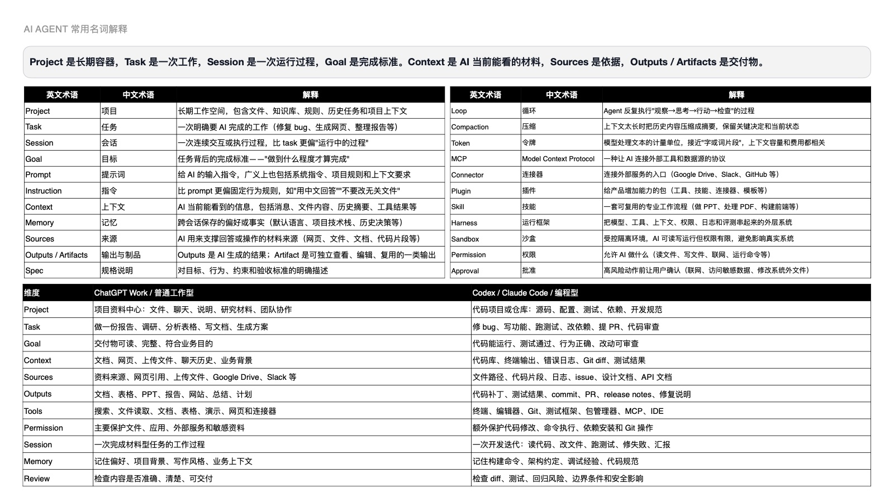
P118 Project 是长期容器，Task 是一次工作，Session 是一次运行过程，Goal 是完成标准。Context 是 AI 当前能看的材料，Sources 是依据，Outputs / Artifacts 是交付物。AI Agent 常用名词解释
Project 是长期容器，Task 是一次工作，Session 是一次运行过程，Goal 是完成标准。Context 是 AI 当前能看的材料，Sources 是依据，Outputs / Artifacts 是交付物。
谁在做事
Agent、Coding Agent、Subagent、Multi-agent
怎么推进
Plan、Build、Goal、Spec、Loop
靠什么做事
Tool Use、MCP、Connector、Plugin、Skill
英文术语 | 中文术语 | 解释 |
Project | 项目 | 长期工作空间，包含文件、知识库、规则、历史任务和项目上下文 |
Task | 任务 | 一次明确要 AI 完成的工作（修复 bug、生成网页、整理报告等） |
Session | 会话 | 一次连续交互或执行过程，比 task 更偏"运行中的过程" |
Goal | 目标 | 任务背后的完成标准——"做到什么程度才算完成" |
Prompt | 提示词 | 给 AI 的输入指令，广义上也包括系统指令、项目规则和上下文要求 |
Instruction | 指令 | 比 prompt 更偏固定行为规则，如"用中文回答""不要改无关文件" |
Context | 上下文 | AI 当前能看到的信息，包括消息、文件内容、历史摘要、工具结果等 |
Memory | 记忆 | 跨会话保存的偏好或事实（默认语言、项目技术栈、历史决策等） |
Sources | 来源 | AI 用来支撑回答或操作的材料来源（网页、文件、文档、代码片段等） |
Outputs / Artifacts | 输出与制品 | Outputs 是 AI 生成的结果；Artifact 是可独立查看、编辑、复用的一类输出 |
Spec | 规格说明 | 对目标、行为、约束和验收标准的明确描述 |
维度 | ChatGPT Work / 普通工作型 | Codex / Claude Code / 编程型 |
Project | 项目资料中心：文件、聊天、说明、研究材料、团队协作 | 代码项目或仓库：源码、配置、测试、依赖、开发规范 |
Task | 做一份报告、调研、分析表格、写文档、生成方案 | 修 bug、写功能、跑测试、改依赖、提 PR、代码审查 |
Goal | 交付物可读、完整、符合业务目的 | 代码能运行、测试通过、行为正确、改动可审查 |
Context | 文档、网页、上传文件、聊天历史、业务背景 | 代码库、终端输出、错误日志、Git diff、测试结果 |
Sources | 资料来源、网页引用、上传文件、Google Drive、Slack 等 | 文件路径、代码片段、日志、issue、设计文档、API 文档 |
Outputs | 文档、表格、PPT、报告、网站、总结、计划 | 代码补丁、测试结果、commit、PR、release notes、修复说明 |
Tools | 搜索、文件读取、文档、表格、演示、网页和连接器 | 终端、编辑器、Git、测试框架、包管理器、MCP、IDE |
Permission | 主要保护文件、应用、外部服务和敏感资料 | 额外保护代码修改、命令执行、依赖安装和 Git 操作 |
Session | 一次完成材料型任务的工作过程 | 一次开发迭代：读代码、改文件、跑测试、修失败、汇报 |
Memory | 记住偏好、项目背景、写作风格、业务上下文 | 记住构建命令、架构约定、调试经验、代码规范 |
Review | 检查内容是否准确、清楚、可交付 | 检查 diff、测试、回归风险、边界条件和安全影响 |
英文术语 | 中文术语 | 解释 |
Loop | 循环 | Agent 反复执行"观察→思考→行动→检查"的过程 |
Compaction | 压缩 | 上下文太长时把历史内容压缩成摘要，保留关键决定和当前状态 |
Token | 令牌 | 模型处理文本的计量单位，接近"字或词片段"，上下文容量和费用都相关 |
MCP | Model Context Protocol | 一种让 AI 连接外部工具和数据源的协议 |
Connector | 连接器 | 连接外部服务的入口（Google Drive、Slack、GitHub 等） |
Plugin | 插件 | 给产品增加能力的包（工具、技能、连接器、模板等） |
Skill | 技能 | 一套可复用的专业工作流程（做 PPT、处理 PDF、构建前端等） |
Harness | 运行框架 | 把模型、工具、上下文、权限、日志和评测串起来的外层系统 |
Sandbox | 沙盒 | 受控隔离环境，AI 可读写运行但权限有限，避免影响真实系统 |
Permission | 权限 | 允许 AI 做什么（读文件、写文件、联网、运行命令等） |
Approval | 批准 | 高风险动作前让用户确认（联网、访问敏感数据、修改系统外文件） | P119 DeepSeek Harness（DSH）：三个多月从无界面的内核，走到官方桌面端竞品分析 · 案例
DeepSeek Harness（DSH）：三个多月从无界面的内核，走到官方桌面端
06-10
开仓
微内核，一切皆插件，没有界面
06-16
ACP 桥
从 Zed 等编辑器里驱动，自己不做界面
07-19
Web UI
dsh web 在浏览器里起工作台
07-22
CLI
按 profile 启动 web、headless、tui
08-17
首个公开版
0.1.0-rc.7，npx 一行起 Web UI
08-28
官方开始打包
此前社区已出 4–5 个第三方桌面壳
09-24
桌面端预览
Win、Mac M 系列；免装 Node、免开终端
09-29
官网上线
deepseek.com/harness 开放下载：“现在，开箱即用”
命令行：按配置启动，可后台跑任务
Web：本地工作台，左栏会话、中间对话
桌面端（09-29）：新增插件与自动化任务
来源：deepseek-harness 仓库提交记录（06-10～09-24）；IT之家（09-25）；53AI（09-18，二手）；本地运行 dsh 截图与官网截图（用户提供）。 P120 微信开发者工具：七组 Skill 经 CLI 与 MCP 开放给外部 Agent竞品分析 · 单品深挖
微信开发者工具：七组 Skill 经 CLI 与 MCP 开放给外部 Agent
任务状态在哪看
图位待补 · 微信侧 wechatide CLI 命令调用示例
等待发生在哪
图位待补 · wechatide CLI 执行中的终端状态输出
来源：developers.weixin.qq.com / dev.weixin.qq.com 官方文档，核实于 2026-09-14 P121 微信开发者工具（续）：改动审阅交给 Git，服务外部 Agent竞品分析 · 单品深挖
微信开发者工具（续）：改动审阅交给 Git，服务外部 Agent
审阅与回退落在哪
图位待补 · 微信侧改动推给 Git 后的 diff 视图
其他 IDE：各家至少有 diff 或专门面板
微信侧：整体交给 Git，分不出这次 AI 改了什么
服务的是谁
图位待补 · 外部客户端（CodeBuddy/Cursor/Claude）连接调用示例
其他 IDE：自家 IDE 内置的 Agent
微信侧：CodeBuddy · Cursor · Claude 等外部客户端
代价：IDE 里看不到任务状态，这正是 01 Agent Team · 13 AI 协作时间轴 要补的：即使 IDE 只被当工具调用，过程也要看得见。
来源：developers.weixin.qq.com / dev.weixin.qq.com 官方文档，核实于 2026-09-14 P122 八家分三个阵营：巨头开放协议，AI IDE 统一命令，模型厂商扩展工作台竞品分析 · 竞品动态 · 总
八家分三个阵营：巨头开放协议，AI IDE 统一命令，模型厂商扩展工作台
1
传统巨头
Microsoft
JetBrains
Apple
Google
VS Code 开放会话协议，Xcode 让 Agent 先出计划再改代码。
2
AI 原生 IDE
Cursor
TRAE
Cursor、TRAE 同期推出 /goal，按目标而非单条指令派活。
3
模型厂商
Anthropic
OpenAI
Claude Code 在 CLI 里加设计画板，Codex 后台任务可随时插问。
竞争重点从单个功能转向会话、协议等底层能力。 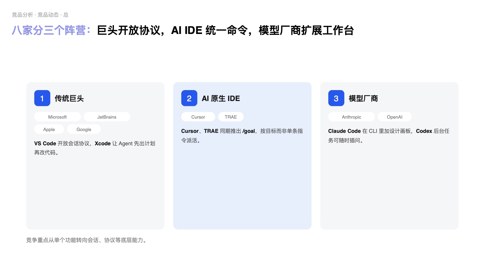
P123 八家上半年定位与 9 月最新动态竞品分析 · 竞品动态 · 总
八家上半年定位与 9 月最新动态
产品
上半年定位
现在最新动态
VS Code
代码优先 / 代理优先双模式，Agents 窗口（04-08）
Agent Host 独立进程 + 开放 AHP 协议，会话脱离编辑器持久化
2026-08-26
JetBrains Air
从零重构独立 IDE，多 Agent 并行（03 月 Public Preview）
正式定名「AI IDE Air」，主打“确定性与可解释性”，多 Agent 等仍未见 GA
未定
Xcode
26.3：从“建议者”到“协作者”（02 月）
27.0 正式版：计划先审后改，MCP 扩到调试／构建
2026-09-14
Android Studio
Gemini 原生集成 + 多模态生成 UI（H1）
Quail 4：本地推理、23 个 Skills、会话分在干／在等你／待审三档
2026-09-01
Cursor
Cursor 3：Tab → 全面 Agents 化（04-02）
Projects：协调者管上千 subagent，云端常驻、自托管机器
2026-09-10
TRAE
IDE / SOLO 双模式（05 月）
Solo 与 Agent 合并为统一 Agent，新增 `/goal /plan /spec`
2026-09-01
Claude Code
目标驱动协作，MCP / Skills（04 月前后）
`/design` 把可视化设计画板带进 CLI，自托管环境公测
2026-08
Codex
从辅助工具到“智能体软件工程师”（04 月前后）
后台任务运行中可直接插问，worktree 支持
2026-09-09
来源：各产品官方 changelog / blog，核实于 2026-09-17。 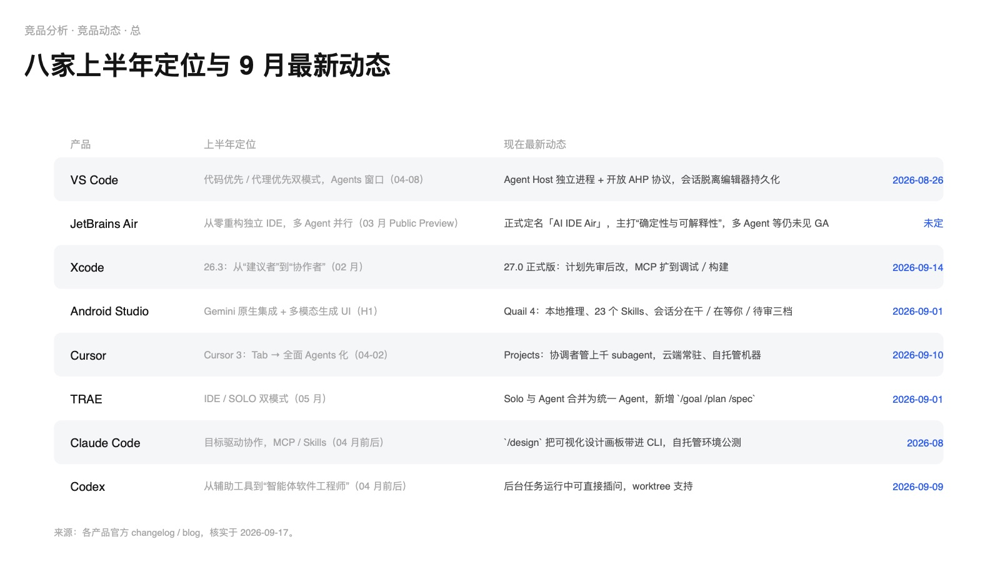
P124 VS Code：会话移到独立进程，浏览器、编辑器、远程可接同一会话竞品分析 · 竞品动态 · 分 1
VS Code：会话移到独立进程，浏览器、编辑器、远程可接同一会话
04 月版本 · 代理窗口
图位待补 · 04 月版本「代理」窗口界面截图
聊天与会话列表为主界面，可跨项目并行多会话；但会话绑在窗口里，一关就断。
08 月版本 · Agent Host + AHP
图位待补 · Agent Host 会话跨浏览器／编辑器／远程连接切换的界面（官方博客配图）
会话归独立进程 Agent Host，可在浏览器、编辑器、远程间切换，各 harness 共用。
09 月 1.136／1.138 · 审批台
图位待补 · 1.138 会话层级视图、待批准项与任务栏角标（官方配图）
Agent Merge 自动处理评审、修检查、解冲突直到可合并；人只审标题与合并选项。
一句判断： 重点从选哪个 Agent，转到谁都能接上同一会话。
来源：code.visualstudio.com/blogs/2026/08/26/agent-host-architecture；code.visualstudio.com/updates/v1_136（09-02）、v1_138（09-16），核实于 2026-09-22 P125 Cursor Projects：云端常驻，协调者只给上千 subagent 分派任务竞品分析 · 竞品动态 · 分 2
Cursor Projects：云端常驻，协调者只给上千 subagent 分派任务
04 月 · Agents Window
图位待补 · 04 月 Agents Window 主视图截图
左侧 Agent 状态、中间对话、右侧预览；一个人管几个会话，要逐个点开看。
09 月 · Projects
图位待补 · Cursor Projects 协调者视图：云端机器与 subagent 并行状态
一个协调者管一个目标，人不逐个看 subagent；可由 PR 或定时唤醒。
08-27 / 09-02 · 运行环境搬家
图位待补 · Self-hosted machines 设置页：My Machines 与 Team pools
云端 Agent 不连 GitHub 也能开工；自托管机器把执行放进自有网络。
一句判断： 01 解决看见几个 Agent 在跑；Cursor 已到只看目标、不看 Agent。
来源：cursor.com/changelog（Projects 09-10；Self-hosted machines 09-02；Start without a repo 08-27），核实于 2026-09-22 P126 TRAE：两种 Agent 合并为一个，用 /plan、/spec、/goal 分三档竞品分析 · 竞品动态 · 分 3
TRAE：两种 Agent 合并为一个，用 /plan、/spec、/goal 分三档
/plan
图位待补 · 「/plan」生成规划文档的界面
范围：小中型任务：功能开发、模块级重构、缺陷修复
流程：生成规划文档 → 人确认 → 按步骤执行
/spec
图位待补 · 「/spec」生成 spec/tasks/checklist 三份文档的界面
范围：系统级任务：大规模重构、多人协作项目
流程：生成 spec / tasks / checklist → 人确认 → 自动更新状态
/goal
图位待补 · 「/goal」设置长期目标的输入界面
范围：长期目标（对齐 Cursor 同名命令的用法）
流程：跨会话维持一个目标，不逐次下达任务
一句判断： TRAE 与 Cursor 同期出 /goal；/spec 留下过程文档，对应 08、13。
来源：docs.trae.cn/ide_spec-and-plan-workflows · trae.cn/changelog，2026-09-01 P127 Claude Code：从编码助手到能设计、能自托管的工作台竞品分析 · 竞品动态 · 分 4
Claude Code：从编码助手到能设计、能自托管的工作台
/design 可视化画板
图位待补 · /design 生成的可编辑画板草案界面
把 Claude Design 画板带进 CLI，先出可编辑草案、选一个再实现
自托管环境
图位待补 · 自托管环境配置或云端会话运行界面
云端会话跑在企业自有基础设施上，Team / Enterprise 公测
一句判断： CLI 里第一次能做设计，与 02 可视化编程、03 二次编辑同向。
来源：code.claude.com/docs/whats-new，核实于 2026-09-17 P128 Claude Code：会话之间能传消息，审查在后台跑，不占主会话竞品分析 · 竞品动态 · 分 4-2
Claude Code：会话之间能传消息，审查在后台跑，不占主会话
跨会话消息
图位待补 · 跨会话消息传递的界面示例
一个会话能把发现直接传给另一个会话，减少重复排查（2026-08 初）
/code-review 后台子代理
图位待补 · /code-review 后台运行状态界面
作为后台子代理独立跑，不阻塞主会话（2026-07-20~24）
一句判断： 一个会话不再只做一件事，与 10 多 Agent 并行协作同向。
来源：code.claude.com/docs/whats-new，核实于 2026-09-17 P129 Codex CLI 0.154.0：后台任务可随时插问，多任务用 worktree 并行竞品分析 · 竞品动态 · 分 5
Codex CLI 0.154.0：后台任务可随时插问，多任务用 worktree 并行
Inline Question Answering
图位待补 · 后台任务中插入提问的终端交互截图
后台任务运行中可直接插入提问
Worktree 支持
图位待补 · 多任务并行的 worktree 界面
新增 worktree 支持，多个任务可在独立工作树里并行推进，2026-09-09
一句判断： 运行中可插问，对应 12 互动式意图确认，Codex 已先做。
来源：learn.chatgpt.com/docs/changelog（原 developers.openai.com/codex/changelog 重定向至此），核实于 2026-09-17 P130 Codex：补 Vim 操作，推理强度可选 max／ultra竞品分析 · 竞品动态 · 分 5-2
Codex：补 Vim 操作，推理强度可选 max／ultra
Vim 模式 R 替换/撤销
图位待补 · Vim 模式下 R 替换操作示例
Vim 模式加入 R 替换与撤销，2026-09-09
max / ultra 推理档位
图位待补 · 推理强度档位选择界面
上线 max／ultra 推理档位，按任务难度选；codex mcp-server 已弃用
一句判断： Codex 开始打磨使用细节，不只比能不能完成任务。
来源：learn.chatgpt.com/docs/changelog，核实于 2026-09-17 P131 Xcode 27：MCP 扩到调试与构建，自带的 Skill 能导出给别的 Agent 用竞品分析 · 竞品动态 · 分 6
Xcode 27：MCP 扩到调试与构建，自带的 Skill 能导出给别的 Agent 用
MCP 扩到调试、scheme、构建设置
官方原文
“The Xcode MCP server has been updated with new tools that allow agents to debug projects by manipulating the active run state, interacting with and reading the contents of the debugger console; listing and switching between available schemes and run destinations and inspecting and modifying build settings, compiler flags, entitlements, and Info.plist keys.”
Xcode 27 Release Notes · Coding Intelligence · New Features
外部 Agent 能控制运行、读调试台、切 scheme、改构建设置和 Info.plist
Skill 一条命令导出
官方原文
“And to use skills in other tools, you can export the ones Xcode uses with 'xcrun agent skills export'. This will create markdown files that you can then import in your workflows.”
WWDC26 · Modernize your UIKit app · 15:05
xcrun agent skills export 把 Xcode 用的 Skill 导成 Markdown，别的工具可以导入
一句判断： 调试、构建都开放给外部 Agent，对应 23 IDE 对外开放编译调试能力。
来源：developer.apple.com/documentation/xcode-release-notes/xcode-27-release-notes；developer.apple.com/videos/play/wwdc2026/278，核实于 2026-09-25。已知局限：Skill 数量官方未列明（第三方统计为 7 个），本页不写。 P132 Xcode 27：计划先批准再动手，计划、改动和预览并排看竞品分析 · 竞品动态 · 分 6-2
Xcode 27：计划先批准再动手，计划、改动和预览并排看
计划先批准再执行
官方原文
“Plans appear as editable Markdown artifacts next to the conversation. You can use dedicated UI to review, annotate, discuss changes to the plan, and approve before the agent proceeds.”
Xcode 27 Release Notes · Coding Intelligence · New Features
计划是可编辑的 Markdown，放在对话旁边，可批注、讨论，批准后 Agent 才动手
Canvas 并排显示改动和预览
官方原文
“Conversations with coding agents feature interactive planning, multiturn Q&A, and a canvas that can render Markdown and display code changes and previews right alongside.”
Apple Newsroom · 2026-06 · Apple aids app development with new intelligence frameworks and advanced tools
对话旁边的 canvas 渲染 Markdown，代码改动和预览并排显示
一句判断： 计划先批再做，对应 12 互动式意图确认；两家直接对标都已有，DevEco 是补齐。
来源：Xcode 27 Release Notes（developer.apple.com）；Apple Newsroom 2026-06（apple.com/newsroom），核实于 2026-09-25。已知局限：“端侧 Neural Engine 离线补全”只见于第三方报道，Apple 官方页面未查到，本页不写。 P133 Android Studio Quail 4：内置 Gemma 4 本地推理，23 个 Skills 可导出竞品分析 · 竞品动态 · 分 7
Android Studio Quail 4：内置 Gemma 4 本地推理，23 个 Skills 可导出
Gemma 4 本地推理
图位待补 · 本地推理开关设置界面
Gemma 4 本地推理内置，不联网也能跑基础模型能力
23 个 Agent Skills 导出
图位待补 · Agent Skills 导出列表
23 个 Android Agent Skills 可导出到 CLI，团队复用
一句判断： Android Studio 每个版本成组交付，不是单点补功能。
来源：Android Studio 官方 release notes，核实于 2026-09-17 P134 Android Studio：会话分三档状态，改动先给摘要竞品分析 · 竞品动态 · 分 7-2
Android Studio：会话分三档状态，改动先给摘要
Agent Mode 并行状态
图位待补 · 多任务并行实时状态视图
多个 Agent 并行，列表分在干／在等你／干完待审三档
Summary of Changes
图位待补 · 改动摘要卡片截图
改动先出摘要；模型可选 Gemini／Anthropic／OpenAI／本地
一句判断： 三档状态与改动摘要已是及格线，01、06／13 要在此之上做。
来源：Android Studio 官方 release notes，核实于 2026-09-17 P135 JetBrains 定名 Air：AI 是默认工作流，非可选增强竞品分析 · 竞品动态 · 分 8
JetBrains 定名 Air：AI 是默认工作流，非可选增强
Public Preview 时名称未定，现已正式定名「AI IDE Air」
三条理念：AI 即默认工作流、确定性与可解释性、代码主导权归开发者
Roadmap 列四项在途能力，如 Multiple Agents，多数尚未兑现
一句判断： 用“确定性与可解释性”回应对 AI 不透明的担心；未 GA，暂不下结论
AI IDE Air 官方 Roadmap：Multiple Agents 等四项在途能力
来源：用户提供的官方发布物料（定位文案＋Roadmap 截图），核实于 2026-09-17；GA 日期未见官方公告，按「已知局限」处理 P136 AI IDE Air：四家 Agent 任选其一，或订阅打包竞品分析 · 竞品动态 · 分 8-2
AI IDE Air：四家 Agent 任选其一，或订阅打包
「连接你的 Agent」页面四选一激活：Codex／Claude Agent 等
也可直接订阅 JetBrains AI／Ultimate 打包，一次拿全部
界面证据：印证「协议开放」页结论
一句判断： 先让用户选 Agent，再卖套餐；IDE 不只推自家 Agent
AI IDE Air「连接你的 Agent」设置页：四家 Agent 四选一，或订阅打包方案
来源：用户提供截图（JetBrains AI IDE Air 连接 Agent 界面），核实于 2026-09-17 P137 Flare：用依赖图代替文件树，多 Agent 改代码实时可见竞品分析 · 新兴产品透视 1
Flare：用依赖图代替文件树，多 Agent 改代码实时可见
MIT 开源，支持 Claude Code／Codex／opencode／aider
文件是节点、import 是边，Agent 每改一次，图即时更新
三种视图看同一份数据：Canvas、Wheel、Districts
十种 Lens 决定颜色含义，Hotspots（改动频次×复杂度）最实用
一句判断： 别家做 Agent 的界面，Flare 做代码库的界面，结构随改动更新。
Wheel 视图：可拖拽单环弦图，文件是节点、import 是边（用户提供截图）
来源：github.com/AlgoNoRhythm/Flare（MIT），核实于 2026-09-17。版本未对齐：资料称 v2.0.0／2026-08-30，Releases 仅至 v1.1.0／2026-08-16，package.json 为 2.1.0。Canvas 视图未采到实截，本页只放 Wheel。 P138 Flare：每个 Agent 有唯一编号，改动按批审查，风险改动单独排队竞品分析 · 新兴产品透视 1
Flare：每个 Agent 有唯一编号，改动按批审查，风险改动单独排队
身份：按 MCP 会话分配唯一名（如 Claude 1），编号不复用
按批审查：只监听不拦截，按 burst（一批改动）审，可一键撤销
风险排队：高风险改动置顶；影子 git 历史让每批可回滚
一句判断： 多 Agent 并行时，谁改的、风险多大一眼可见，每批可回滚
图位待补 · Agent 身份列表、Channel 审查面板、风险 chip 与影子历史 diff（待补实拍）
来源：github.com/AlgoNoRhythm/Flare，核实于 2026-09-17；版本口径说明见上一页 P139 Windsurf：VS Code 底子的常驻 Agent 编辑器，已归 Cognition竞品分析 · 新兴产品透视 2
Windsurf：VS Code 底子的常驻 Agent 编辑器，已归 Cognition
Cascade 是常驻式 Agent：理解全代码库，自主执行多步任务
底子是 VS Code，定位「AI 是一等协作者，不是自动补全插件」
所有权几经变化，2025 年底被 Cognition（Devin 的公司）接手
[C] 证据等级，综合第三方评测，未逐条核对官方一手资料
一句判断： 思路与 VS Code Agent Host 相近；刚换东家，后续投入待观察
图位待补 · Cascade Agent 工作流程界面（第三方评测配图，待补官方实拍）
来源：deployhq.com/guides/windsurf、codegen.com/ai-tools/windsurf 等第三方评测综合（[C] 证据等级），核实于 2026-09-17 P140 Zed：Rust 重写内核，Agent 面板多会话、改动可回滚竞品分析 · 新兴产品透视 3
Zed：Rust 重写内核，Agent 面板多会话、改动可回滚
官方三条主张：Fast、Intelligent、Collaborative
别家界面趋同，Zed 花两年从零重写内核，押注底层性能
Agent Panel 按项目管理多线程会话，每次改动可设检查点回滚
一句判断： 别家外观趋同，Zed 从内核做差异，AI 改动记录也最细。
左：zed.dev 首页三条主张；右：VS Code／Cursor／CodeBuddy 界面高度趋同
来源：zed.dev 官方站点＋zed.dev/docs/ai/agent-panel（官方文档）＋用户提供的第三方评测视频截图，核实于 2026-09-17 P141 Zed：外部 Agent、MCP、模型供应商都由用户自选竞品分析 · 新兴产品透视 3
Zed：外部 Agent、MCP、模型供应商都由用户自选
External Agents 并列 Claude Code／Codex 等，可继续添加
LLM Providers 列了 Kimi／Anthropic 等十余家，可自行添加
界面证据：印证「协议开放」页结论
一句判断： 第三方 Agent 与十余家模型都能自选，开放得最彻底。
Zed Settings：External Agents／MCP Servers 等三栏并列
来源：用户提供截图（Zed 桌面客户端 Settings 页面），核实于 2026-09-17 P142 Replit Agent 4：幻灯片／网站／App 并行构建竞品分析 · 新兴产品透视 4
Replit Agent 4：幻灯片／网站／App 并行构建
Agent 4 从只做 Web 应用，扩到幻灯片、网站、移动应用
Design Mode 改为 Design Canvas，各类产物共用一块无限画布
协作改为共享项目：各自聊天线程＋共享 Kanban 看板
规划与构建并行，不再顺序执行；任务跑在隔离环境
一句判断： 团队和 Agent 共用一块看板，本轮调研产品中仅此一家
图位待补 · Replit Agent 4 Design Canvas 与协作 Kanban 看板界面（待补）
来源：replit.com/blog/whats-changed-agent3-to-agent4，核实于 2026-09-17 P143 Smart Flow：开源可视化工作流编排台，非编码 Agent竞品分析 · 新兴产品透视 5
Smart Flow：开源可视化工作流编排台，非编码 Agent
GPL-3.0 开源，定位「面向开发者的 AI 原生工作流编排平台」
画布提供十余种节点类型，拖拽连线即可搭流程
每个节点配模型与提示词；可看输入 JSON 与逐节点结果、耗时
一句判断： 不改源代码，只编排模型与工具，和编码 Agent 不是一类
左：智能客服分流工作流节点画布；右：运行面板，逐节点执行结果与耗时
来源：微信公众号文章（mp.weixin.qq.com/s/Lw4wlaPIqV_72k3dpsHSXA）及项目开源仓库，核实于 2026-09-17 P144 豆包 MarsCode：字节免费入口，云端 IDE 与插件双形态竞品分析 · 新兴产品透视 6
豆包 MarsCode：字节免费入口，云端 IDE 与插件双形态
字节跳动出品，云端 IDE ＋ 编辑器插件两形态并行，免费使用
覆盖补全、生成、问答、Bug 修复，号称支持 100+ 编程语言
第三方称底层是 GPT-4，与「豆包」命名不符，未核实
一句判断： 云端 IDE 拉新、插件覆盖老用户，与腾讯 CodeBuddy 打法相近
豆包 MarsCode 产品页面（用户提供截图）
来源：aihub.cn/tools/coding/marscode（第三方综合介绍，[C] 证据等级，未逐条核对 marscode.cn 官方一手资料），核实于 2026-09-17 P145 代码小浣熊：商汤较早的企业级 AI 编程助手，三形态并存竞品分析 · 新兴产品透视 7
代码小浣熊：商汤较早的企业级 AI 编程助手，三形态并存
商汤科技出品，国内较早一批 AI 编程助手，覆盖 30+ 语言
三种形态并存：侧边栏／编辑器内／终端面板，集成主流 IDE
定位企业级研发；官方未标模型型号，未见写明「日日新」
一句判断： 侧边栏、编辑器内、终端三形态都做，顺着开发者原有习惯。
代码小浣熊 Raccoon 产品页面（用户提供截图）
来源：sensetime.com/cn/product-detail（商汤官方）＋ aihub.cn/tools/coding/raccoon（第三方综合），核实于 2026-09-17 P146 CodeBuddy IDE：腾讯从插件升级为独立 IDE，主打一句话生成应用竞品分析 · 新兴产品透视 8
CodeBuddy IDE：腾讯从插件升级为独立 IDE，主打一句话生成应用
腾讯出品，从插件升级为独立 IDE，国内版、国际版接的模型不同
「规划-设计-开发-部署」四步打通，含 Figma 一键转代码（D2C）
官方叙事强调「整个流程可以完全不写一行代码」
一句判断： 一个 IDE 走完规划到部署，含 D2C 与自动配后端，国内覆盖最全
CodeBuddy IDE 早期发布海报：多模型、D2C、一键部署
来源：官方发布物料（用户提供）；模型：codebuddy.cn 官方文档（支持 models.json 自接模型）、InfoQ 写作社区 CodeBuddy 文章、腾讯新闻 2026-01-26，核实于 2026-09-25。已知局限：模型名单来自二手报道，官方文档未列全；海报为早期物料，写的 Claude 当前国际版是否仍在列未证实 P147 CodeBuddy IDE 实测：一句话生成可运行的宝可梦图鉴竞品分析 · 新兴产品透视 8
CodeBuddy IDE 实测：一句话生成可运行的宝可梦图鉴
实测「Pokedex 宝可梦图鉴」，一句话需求跑出六项功能
自动选型 React 18 + TypeScript、Vite 5 等，并给出规范目录结构
应用直接在内置预览窗口跑通，全程对话完成，不需要手写代码
一句判断： 产出的是可继续开发的项目骨架，不是一次性 Demo
CodeBuddy IDE 实测：对话生成的「宝可梦图鉴」在内置预览窗口运行
来源：用户提供的实测截图（CodeBuddy IDE 实际运行界面），核实于 2026-09-17 P148 CodeBuddy 插件版：独立 IDE 之前，先把插件铺到数十款主流编辑器竞品分析 · 新兴产品透视 8
CodeBuddy 插件版：独立 IDE 之前，先把插件铺到数十款主流编辑器
以混元＋DeepSeek 为底座，覆盖规划-设计-开发-测试-部署五阶段
核心功能：代码补全、单测生成、代码评审、Craft 开发智能体等
集成 CloudStudio Web IDE，另支持数十款主流 IDE 插件
一句判断： 先用插件覆盖老用户，再推独立 IDE 做全流程，与豆包 MarsCode 打法相近
图位待补 · CodeBuddy 插件版全流程功能面板（腾讯云官方配图，待补）
来源：cloud.tencent.com/developer/article/2677102（腾讯云开发者社区），核实于 2026-09-17 P149 Qoder：阿里把「看懂一个陌生仓库」做成产品功能竞品分析 · 新兴产品透视 9
Qoder：阿里把「看懂一个陌生仓库」做成产品功能
阿里巴巴出品，2025 年秋上线，公开测试期、全功能免费
两种模式：Chat Agent Mode 配对，Quest Mode 异步委派
核心功能：Repo Wiki 自动生成项目知识库，Action Flow 可视化执行计划
Repo Wiki 生成慢，中型项目约 2 小时，6000 文件以上有规模限制
一句判断： 把「先看懂再动手」做成独立功能，便于人和 Agent 接手陌生仓库
图位待补 · Qoder Quest 模式与 Repo Wiki 界面（官方/第三方评测配图，待补）
来源：aliyun.com/product/qoder（阿里云官方）＋ jimmysong.io/blog/qoder-alibaba-ai-ide-personal-review（第三方实测），核实于 2026-09-17 P150 CatPaw：美团免费 IDE，沿用 VS Code 习惯，前端可点选修改竞品分析 · 新兴产品透视 10
CatPaw：美团免费 IDE，沿用 VS Code 习惯，前端可点选修改
美团出品，免费使用，内置 kimi／glm 等多款模型可选
兼容 VS Code 项目管理，建工作区、切项目、克隆仓库路径不变
三处细节：补全少出冗余代码、Ctrl+K 行内改／问、三种对话模式
可视化前端编辑：在预览里点选元素，AI 直接定位修改
一句判断： 靠免费和不改习惯争取老用户；点选改前端较少见
CatPaw 启动页与侧边栏模型选择列表（用户提供截图）
来源：微信公众号「不写程序的程序猿」（mp.weixin.qq.com/s/Iy3cauc3mZWAdxmw96oPPAA，[C] 证据等级），核实于 2026-09-17 P151 Orca：25＋种 Agent 各跑独立 worktree竞品分析 · 新兴产品透视 11
Orca：25＋种 Agent 各跑独立 worktree
MIT 开源，YC 孵化，GitHub 60.4K star
同时运行 25＋种编码 Agent，各装进独立 git worktree
手机端 Orca Mobile：远程查看 Agent、完成通知、审批
桌面端支持 macOS／Windows／Linux，可无头模式跑服务器，完全免费
一句判断： worktree 隔离、支持 25＋种 Agent、手机看进度，同类覆盖最全
左：三栏并排的多 Agent 终端会话；右：GitHub 仓库页
来源：github.com/stablyai/orca（MIT，官方仓库首页），核实于 2026-09-17 P152 Orca：把「审查 Agent 输出」做成产品功能竞品分析 · 新兴产品透视 11
Orca：把「审查 Agent 输出」做成产品功能
主打 Design Mode、AI 差异注释、SSH 工作树等功能
实测 2.85 万行 SwiftUI 代码库，自动拆成 6 个子系统并行跑
一句判断： 瓶颈从“怎么派活”转到“怎么审”，Orca 把审查做成了功能
实测：一次「review the iOS APP」自动拆成 6 个并行 review agent
来源：github.com/stablyai/orca（MIT，官方仓库首页 Features 部分）＋用户提供实测截图，核实于 2026-09-17 P153 Aider：纯终端结对编程，每次改动自动提交 Git，过程可查竞品分析 · 新兴产品透视 12
Aider：纯终端结对编程，每次改动自动提交 Git，过程可查
Apache-2.0 开源，约 4.9 万星，直接改本地 Git 仓库
三条设计哲学：本地运行、Git 原生集成、多模型支持
用仓库地图在有限上下文里掌握结构，可跨文件修改
一句判断： 每次修改都是一次带说明的 Git 提交，靠现成 Git 让过程可查，成本最低
图位待补 · Aider 纯终端界面：命令行对话＋Git 提交记录（官方仅有动图，待补实拍）
来源：github.com/Aider-AI/aider（Apache-2.0，官方仓库首页）＋微信公众号文章综合介绍，核实于 2026-09-17 P154 hmharness：主打「零 IDE 完成鸿蒙开发全流程」竞品分析 · 新兴产品透视 13
hmharness：主打「零 IDE 完成鸿蒙开发全流程」
开源 MIT CLI，卖点「不开 DevEco Studio · 不登华为账号……」
六步流水线：脚手架→构建→签名→装机→启动→回读日志，一句命令跑通
API 知识图谱 927 d.ts／2万+ 符号防幻觉；内核 0 运行时依赖
一句判断： 唯一专做鸿蒙、公开主打“不用 DevEco Studio”的开源工具，应优先核实
hmharness 官方海报：六步流水线与核心数据条（用户提供）
来源：用户提供的官方发布海报（hmharness，开源 MIT），核实于 2026-09-17；仓库地址、团队信息与真实能力边界待核实 P155 hmharness：自进化要过测试门槛，不达标就回滚竞品分析 · 新兴产品透视 13
hmharness：自进化要过测试门槛，不达标就回滚
自进化：训练门（A/B 基准）→ 保留门（防过拟合）→ 晋升，回归即回滚
新技能先以「金丝雀」进 20% 会话对照实验，不达标打回
日志公开在官网证据页，直言「越用越聪明」是机制而非已证事实
一句判断： 差异在克制：公开证据，承认“越用越聪明”尚未证实
图位待补 · 自进化流水线：训练门→保留门→金丝雀 20% 会话→晋升/回滚（暂无配图）
来源：用户提供的产品说明文字（自进化机制描述），核实于 2026-09-17；官网证据页与具体数据集内容未独立核实 P156 Figma Motion：动效在画布内制作，并纳入设计系统竞品分析 · 新兴产品透视 14
Figma Motion：动效在画布内制作，并纳入设计系统
Config 2026 发布，所有方案开放公开测试（open beta）
画布底部时间轴：套预设或打关键帧，Auto-keyframe 随播放头自动录制
动效变量 + 动画组件：动效沉淀为设计系统变量，跨文件自动生效
Dev Mode 只读时间轴：一键复制 CSS／JSON，可经 MCP 传给 Agent
一句判断： 动效纳入设计系统、可导出代码，与 D2C 同一方向。
图位待补 · Motion 时间轴示意：关键帧、缓动面板与代码导出（待补真实截图）
来源：Figma 官方博客 Config 2026 Recap（figma.com/blog/config-2026-recap）、Figma Help Center「What's new from Config 2026」，核实于 2026-09-20；发布动画组件／AI 生成／高清导出需付费方案，Figma for Government 不支持 P157 开发者案例：App 上架后，日常开发不再打开 DevEco Studio竞品分析 · 用户实证
开发者案例：App 上架后，日常开发不再打开 DevEco Studio
「宝贝日程表」上架后，日常开发不再打开 DevEco Studio
需求交给 Agent 读工程、改代码、编译装机，作者只看设备效果
SDK／签名工具仍在，「吃灰」的只是那个很少点开的 IDE 窗口
一句判断： 有人已不开 IDE 做鸿蒙，IDE 要给出必须打开的理由。
作者上架的「宝贝日程表」鸿蒙 App，四个主入口全由 Agent 实现（用户提供截图）
来源：微信公众号文章「AI 写代码之后，DevEco Studio 在我电脑里吃灰了」（Veer，2026-09-08），核实于 2026-09-17 P158 同一作者的六条做法，多条对应 01、03、13竞品分析 · 用户实证
同一作者的六条做法，多条对应 01、03、13
1. 首个需求写清「谁用、何时用、做什么、首版边界」四件事
2. 大需求拆小步，派活写明「先读现状、限定范围、验收标准」
3. 用 Git 兜底，改坏了能 diff／撤回
4. 反馈具体到能复现，而非「再好看一点」
5. 不看「已完成」口头汇报，拿操作结果验收
6. 上架进度按状态汇报，不笼统说「全部搞定」
一句判断： 第 3–5 条讲“人怎么放心把活交给 Agent”，可直接作体验验证清单。
图位待补 · 方法论摘录：需求四要素、小步可检查、Git 兜底、按操作结果验收（暂无配图）
来源：微信公众号文章「AI 写代码之后，DevEco Studio 在我电脑里吃灰了」（Veer，2026-09-08），核实于 2026-09-17 P159 IDEA 变 MCP Server：AI 改完直接看报错、跑构建竞品分析 · 底座能力观察 1
IDEA 变 MCP Server：AI 改完直接看报错、跑构建
IDEA 内置 MCP Server：AI 发指令，由 IDE 自己调检查器、跑索引
Claude Code 等一键接入，多项目可指定路由互不串台
默认更安全：危险命令需手动确认，工具可关，数据库建议只读
「调试仅旗舰版可用」「IDEA 须保持运行」两点未独立核实
一句判断： DevEco 同基于 IntelliJ，让 AI 调用 IDE 能力或可直接复用这套机制。
图位待补 · IntelliJ IDEA MCP Server 配置与调用界面（官方文档配图，待补）
来源：jetbrains.com/help/idea/mcp-server.html（官方文档），核实于 2026-09-17；「调试旗舰版限定」「IDEA 须保持运行」两点为用户提供信息，未独立核实 P160 Lithe-IDEA：弃 IntelliJ 底座重写轻量 IDE竞品分析 · 底座能力观察 2
Lithe-IDEA：弃 IntelliJ 底座重写轻量 IDE
Apache-2.0 开源，GitHub 712 星，轻量 IDE
另起技术底座：Windows 用 Tauri 2，两端共享 Rust Core
「按需启动」语言服务器、终端、调试器，基础内存约 300～400MB
一句判断： 判断是 Agent 写代码、IDE 负责看懂，所以先压低内存和启动成本。
内存占用约 233.9MB，“按需启动”确实压低了空载内存（用户提供截图）
来源：微信公众号文章（mp.weixin.qq.com/s/d55_DzmGMH64i2qs7TVV2g）＋ GitHub 仓库 lithe.top，核实于 2026-09-17 P161 Lithe-IDEA：保留检索和一键运行，Diff 审查时可调 AI竞品分析 · 底座能力观察 2-2
Lithe-IDEA：保留检索和一键运行，Diff 审查时可调 AI
保留 IDEA 常用检索，自动识别 Spring Boot 等可运行入口，一键运行调试
Git 双栏 Diff 审查改动，可调用 AI 生成 Commit Message
README 原话：「AI 负责编写代码，Lithe 负责帮你看懂、跑通并审查」
一句判断： 与 IDEA MCP Server 同向：先做好 AI 改完之后的查看与运行。
Spring Boot 项目自动识别入口，一键运行看输出（用户提供截图）
来源：微信公众号文章（mp.weixin.qq.com/s/d55_DzmGMH64i2qs7TVV2g）＋ GitHub 仓库 lithe.top，核实于 2026-09-17 P162 IDE 主界面正从代码编辑器变成 AI 会话，人从改代码变成做确认竞品分析 · 关键洞察 6
IDE 主界面正从代码编辑器变成 AI 会话，人从改代码变成做确认
1
“打开工程”这一步在消失
VS Code 不用先手动下载代码仓库；Cursor 项目跑在云端，合上电脑也不停
2
改代码交给 Agent
Agent 自动解冲突、生成 PR，做完带回来给人检查
3
Xcode 27 也把对话挪进了编辑区
对话占一个编辑器窗格，旁边显示产物；新增源码改动视图
Cursor 项目页：以会话为主，没有文件树
来源：VS Code 1.136／1.138 更新说明（09-02、09-16）；Cursor changelog（08-27～09-10）。Agent Merge 为预览功能，趋势由功能形态推断。 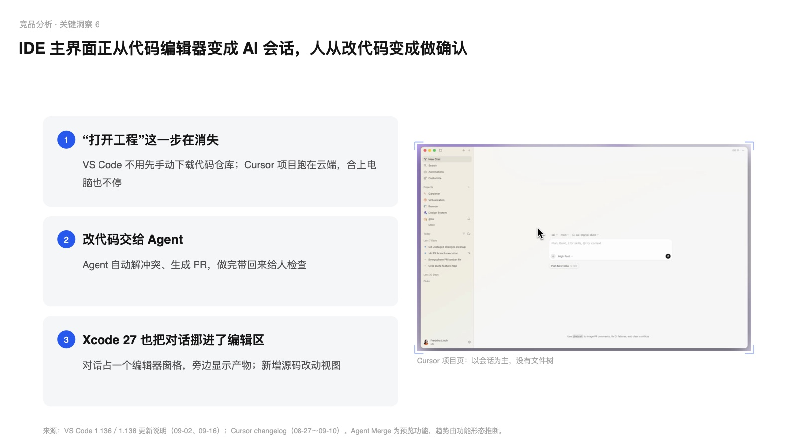
P163 AI 会话正在脱离编辑器窗口：VS Code、Cursor、TRAE 先做，Xcode、Android Studio 跟进竞品分析 · 关键洞察 5
AI 会话正在脱离编辑器窗口：VS Code、Cursor、TRAE 先做，Xcode、Android Studio 跟进
1
VS Code、Cursor、TRAE 都让会话脱离窗口
VS Code 让会话在后台独立运行，Cursor 放到云端运行，TRAE 让一个目标跨多个会话推进
2
开发者按任务目标管理多个 AI 会话
Cursor 协调者负责拆任务、派发；TRAE 的 /goal 跨会话维持一个目标
3
两家直接对标把会话做成了标签
Xcode 27 会话能开成标签页、新窗口；Android Studio 可开 New Agent Tab 并排
VS Code：会话可在本机或远端运行（08-26）
来源：VS Code 官方博客（08-26）；Cursor changelog（09-10）；TRAE 文档（09-01）；Xcode 27 Release Notes；Android Studio Quail 2（07-14）。 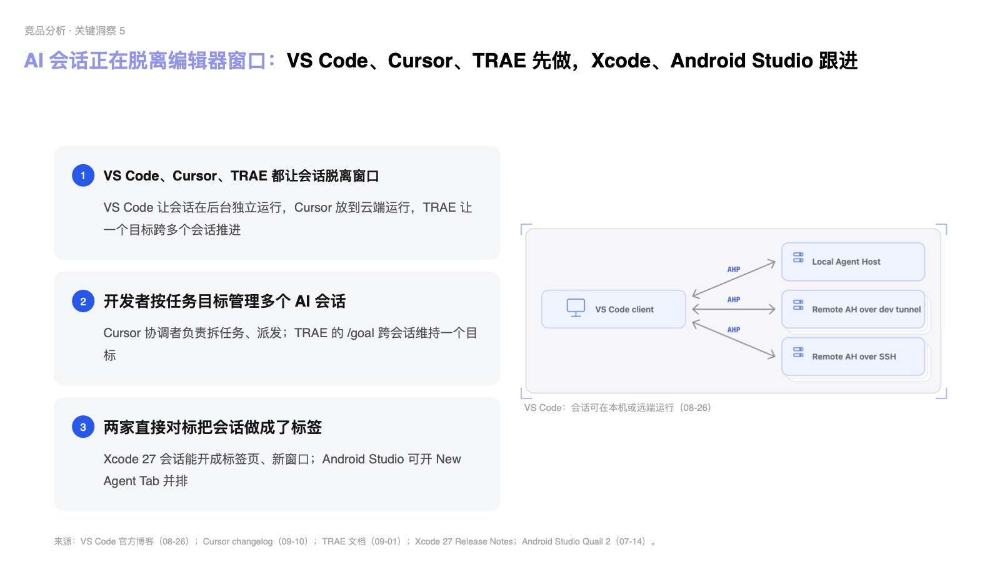
P164 三个新工具第一功能相同：AI 改了什么，要看得见、退得回竞品分析 · 关键洞察 4
三个新工具第一功能相同：AI 改了什么，要看得见、退得回
1
三种形态，第一功能都是审阅和回滚
Flare 用独立 Git 记录每次改动、可回退；Orca 专门审 Agent 输出；Aider 每次改动自动提交
2
还要看出“是哪个 Agent 改的”
Flare 给每个 Agent 固定编号，出了问题能查到是谁改的
3
两家直接对标只跟进了一半
Xcode 27 可按每次提问整体撤回；Android Studio 有改动摘要，没有回退
Orca：一次审查拆成 6 个并行 Agent
Orca：多个 Agent 三栏并排逐个审
来源：Flare 仓库（MIT）；Orca、Aider 官方资料及实测；Android Studio Quail 4（09-01）；Xcode 官方文档（核实于 09-24）。逐家证据见附录。 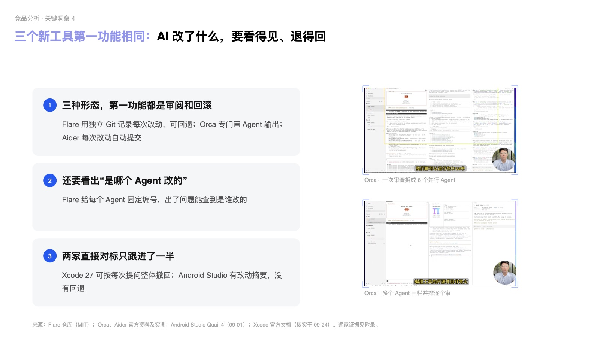
P165 开发者在用 AI 但不敢放手：84% 在用，只有 33% 信任它的输出竞品分析 · 关键洞察 3
开发者在用 AI 但不敢放手：84% 在用，只有 33% 信任它的输出
1
采用率 84%，信任度 33%
差 51 个百分点：在用，但不敢放手
2
对标 IDE 今年都出过事故
Android Studio 修复列表：Agent 执行错误命令删了磁盘内容；Xcode 论坛：审批卡片一弹就卡死
3
信任了，开发者就整段交出去
一位鸿蒙开发者：上架后很少再开 DevEco，改功能、编译都交给 Agent
AI 编码工具：在用 vs 信任输出
84%
在用
33%
信任它的输出
Stack Overflow Developer Survey 2025（n=33,662）
来源：Stack Overflow Developer Survey 2025（n=33,662，全球样本）；Android Studio 2026.1.3 修复列表；Apple 开发者论坛（约 09-17）。 P166 8 款产品 9 月更新都在让 AI 用得更放心，没有一家主推模型更强竞品分析 · 关键洞察 2
8 款产品 9 月更新都在让 AI 用得更放心，没有一家主推模型更强
1
模型能力相关更新：0 条
四家主推中途叫停、改动审阅、权限分级
2
模型最强的几家也不主打模型
Claude Code、Codex 这一轮的卖点都在交互和过程
3
两家直接对标也一样
Xcode 27、Android Studio Quail 主推计划批注、权限分级、改动摘要
Air Roadmap：多 Agent、云端、多平台、Web
Air：Codex、Claude 等四家 Agent 任选
来源：两期竞品动态观察（核实于 09-17）；Xcode 27、Android Studio Quail 3／4 官方发布。“0 条”仅指本轮采集范围，归类为本方判断。 P167 Xcode、Android Studio 都已向外部 AI 开放编译调试，DevEco CLI 6 月起跟上竞品分析 · 关键洞察 1
Xcode、Android Studio 都已向外部 AI 开放编译调试，DevEco CLI 6 月起跟上
1
Xcode 27：不开 Xcode 也能调
外部 AI 能直接调试、改构建设置、在模拟器上点击截图；任何兼容的 Agent 也能装进 Xcode
2
Android Studio：CLI 1.0 让外部 AI 调用 IDE
Claude Code、Codex 能调用性能分析、界面预览、远程真机；微信、Unity 也在跟进
3
已有开源项目绕开 DevEco
hmharness 主打“零 IDE 跑通鸿蒙开发全流程”
Xcode 设置：可装多家 Agent，并授权外部 Agent
hmharness 海报（用户提供）
来源：Xcode 27 Release Notes（09-14）；Android CLI 1.0 官方博客（05-19）；微信、Unity、Zed 官方文档；hmharness 仓库。逐家证据见附录。